# Import Pandas, Seaborn, and related
import pandas as pd
import seaborn as sns
import numpy as np
import matplotlib.pyplot as plt
# Set the Seaborn context
sns.set_context('talk')Visuals To Show When Lecturing About Data Visualization Stories
Seven kinds of data stories, each with candidate visuals to choose from
How To Use This Page
This page is designed to stand in for slides. Every data story type below has several candidate visuals. Each candidate is numbered, captioned, and shows the code that produced it, so you can pick the ones that best fit your lecture and your audience.
Every example uses Seaborn and Matplotlib. Wherever possible the data come from Seaborn’s built-in example datasets. Where no built-in dataset makes the point (review summaries, dials, a battery gauge), the data are fictional and are generated in plain sight in the code.
| Story type | The question it answers | Typical visuals |
|---|---|---|
| Comparison | How do groups differ? | Side-by-side box or violin plots, bar charts |
| Change over time | What happened, and when? | Line charts, one violin per year |
| Correlation | Do two things move together? | Scatter, hexbin, heat map |
| Distribution | What does one variable look like? | Histogram, solo box, solo violin |
| Composition | What are the parts of the whole? | Pie, stacked bar, 100% stacked bar |
| Ranking | Who or what is best, and who is worst? | Leader boards, review summaries |
| Process or status | Where are we right now? | Dials, meters, Sankey, battery |
Setup
All figures share the same imports and the same Seaborn context.
The Comparison Stories
A comparison story answers the question how do these groups differ? The reader should be able to see, in a glance, which group is higher, lower, or more spread out. Side-by-side box plots and violin plots show the whole distribution for each group. Bar charts reduce each group to a single number, which is simpler but hides spread.
Candidates: Figure 1, Figure 3, Figure 4, Figure 5.
# Load the example datasets used in this section
penguins = sns.load_dataset('penguins')
tips = sns.load_dataset('tips')
mpg = sns.load_dataset('mpg')
titanic = sns.load_dataset('titanic')Candidate 1: Side-by-Side Box Plots
A box plot reduces each group to five numbers (minimum, quartiles, median, maximum) and flags outliers. It is the quickest way to compare centers and spreads.
# Compute the median body mass of each species
medians = penguins.groupby('species')['body_mass_g'].median()
# Create a figure and axis object
fig, ax = plt.subplots(figsize=(6, 3))
# Box plot of body mass by species
sns.boxplot(data=penguins, x='species', y='body_mass_g',
order=medians.index, hue='species',
palette='pastel', legend=False, ax=ax)
# Label the median of each box
for i, m in enumerate(medians):
ax.text(i, m, '{:,.0f} g'.format(m),
ha='center', va='center', size='xx-small',
bbox=dict(boxstyle='round', fc='white', ec='none', alpha=0.8))
# Set the title and axis labels
ax.set_title('Gentoo Are Heavier Than Others')
ax.set_xlabel('Penguin Species')
ax.set_ylabel('Body Mass (grams)')
plt.show()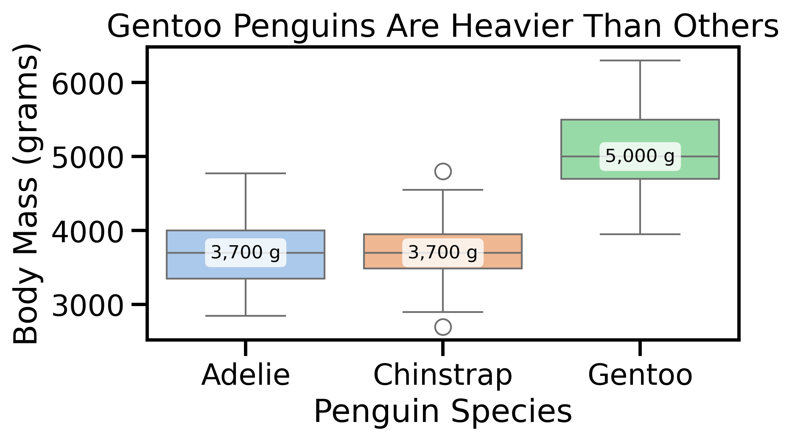
Or go horizontal…
# Compute the median body mass of each species
medians = penguins.groupby('species')['body_mass_g'].median()
# Create a figure and axis object
fig, ax = plt.subplots(figsize=(6, 3))
# Box plot of body mass by species
sns.boxplot(data=penguins, y='species', x='body_mass_g', width=0.5,
order=medians.index, hue='species',
palette='pastel', legend=False, ax=ax, orient='h')
# Label the median of each box
for i, m in enumerate(medians):
ax.text(m, i, '{:,.0f} g'.format(m),
ha='center', va='center', size='xx-small',
bbox=dict(boxstyle='round', fc='white', ec='none', alpha=0.8))
# Replace the y-axis labels with species names above each box,
# left aligned at hard-coded (x, y) data coordinates
ax.text(2700, -0.25, 'Adelie', ha='left', va='center', size='xx-small')
ax.text(2700, 0.7, 'Chinstrap', ha='left', va='center', size='xx-small')
ax.text(3900, 1.7, 'Gentoo', ha='left', va='center', size='xx-small')
# Set the title and axis labels, and remove the y-axis labels
ax.set_title('Gentoo Are Heavier Than Others')
ax.set_xlabel('Body Mass (grams)')
ax.set_ylabel('')
ax.set_yticks([])
plt.show()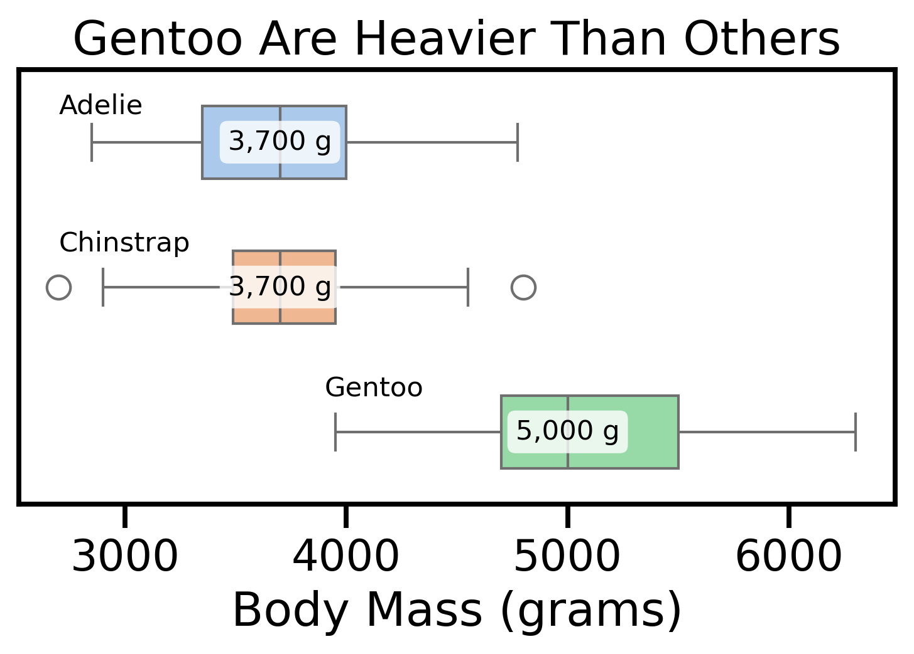
Candidate 2: Side-by-Side Violin Plots
A violin plot adds the shape of each distribution. The inner box keeps the familiar quartile summary while the outline reveals skew and multiple peaks.
# Compute the mean bill for each day
mean_bill = tips.groupby('day', observed=True)['total_bill'].mean()
# Create a figure and axis object
fig, ax = plt.subplots(figsize=(6, 3))
# Violin plot of total bill by day
sns.violinplot(data=tips, x='day', y='total_bill',
order=mean_bill.index, hue='day', inner='box',
palette='pastel', legend=False, ax=ax)
# Label the mean of each violin along the top
for i, m in enumerate(mean_bill):
ax.text(i, 58, 'Mean\n${:.2f}'.format(m),
ha='center', va='center', size='small')
# Make room for the labels
ax.set_ylim(0, 65)
# Set the title and axis labels
ax.set_title('Weekend Bills Are Larger Than Weekday Bills')
ax.set_xlabel('Day of the Week')
ax.set_ylabel('Total (Dollars)')
plt.show()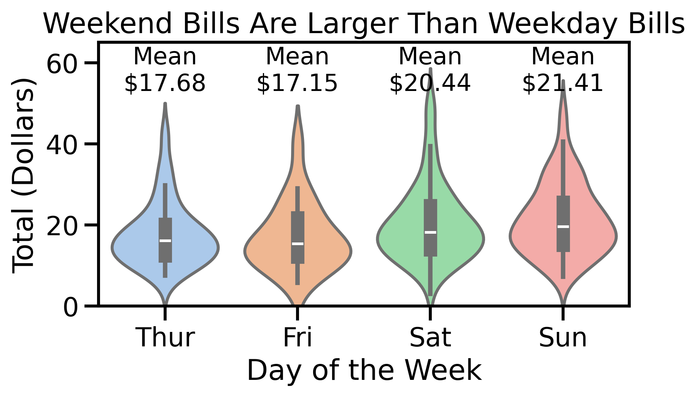
Candidate 3: Bar Chart of Group Averages
When the audience only needs the headline number, a bar chart with height labels is the clearest choice. Remember that the bars hide the spread within each group.
# Compute the average miles per gallon by origin
avg_mpg = mpg.groupby('origin')['mpg'].mean().sort_values(ascending=False)
# Create a figure and axis object
fig, ax = plt.subplots(figsize=(6, 3))
# Bar chart of average mpg by origin
sns.barplot(x=avg_mpg.index.str.title(), y=avg_mpg.values,
hue=avg_mpg.index.str.title(), palette='pastel',
legend=False, ax=ax)
# Add height labels above the bars
for i, v in enumerate(avg_mpg):
ax.text(i, v + 0.5, '{:.1f}'.format(v),
ha='center', size='x-large')
# Set the title and axis labels
ax.set_title('Japanese Cars Lead in Fuel Efficiency')
ax.set_xlabel('Region of Vehicle Origin')
ax.set_ylabel('Average (MPG)')
ax.set_ylim(0, 36)
plt.show()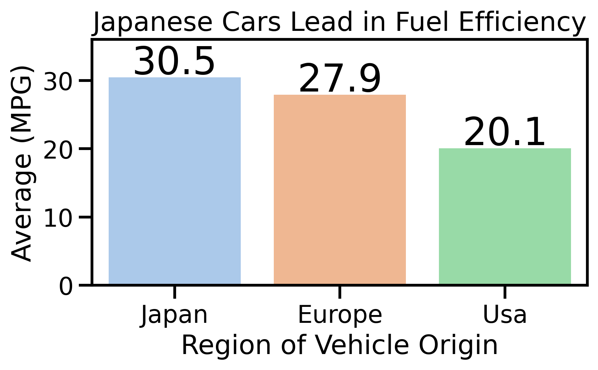
Candidate 4: Grouped Bar Chart
A grouped bar chart compares groups across a second categorical variable. Keep the number of bars manageable so each height label stays readable.
# Compute the survival rate (as a percent) by class and sex
survival = (titanic.groupby(['pclass', 'sex'])['survived']
.mean().mul(100).reset_index())
# Create a figure and axis object
fig, ax = plt.subplots(figsize=(6, 4))
# Grouped bar chart of survival rate
sns.barplot(data=survival, x='pclass', y='survived',
hue='sex', palette='pastel', ax=ax)
# Add height labels above each bar
for container in ax.containers:
ax.bar_label(container, fmt='%.0f%%', padding=3, size='medium')
# Set the title and axis labels
ax.set_title('Women Survived at Higher Rates Than Men')
ax.set_xlabel('Passenger Class')
ax.set_ylabel('Survival Rate (%)')
ax.set_ylim(0, 110)
ax.legend(loc='upper right')
plt.show()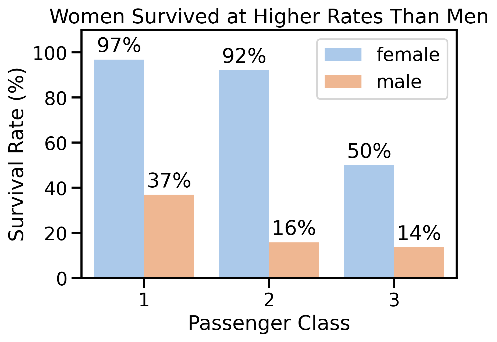
The Change Over Time Stories
A change over time story answers what happened, and when? Time goes on the horizontal axis and the eye follows the line. Line charts are the default. When the audience needs to see how the whole distribution shifted, one violin or box plot per period works well.
Candidates: Figure 6, Figure 7, Figure 8, Figure 9, Figure 10, Figure 11.
# Load the example datasets used in this section
flights = sns.load_dataset('flights')
health = sns.load_dataset('healthexp')
dowjones = sns.load_dataset('dowjones')
fmri = sns.load_dataset('fmri')
mpg = sns.load_dataset('mpg')Candidate 1: Simple Line Chart With Point Labels
One series, one story. Markers and data labels let the audience read exact values without hunting for gridlines.
# Total the monthly passengers into an annual figure
annual = flights.groupby('year')['passengers'].sum().reset_index()
# Create a figure and axis object
fig, ax = plt.subplots(figsize=(6, 3))
# Line chart of annual passengers
sns.lineplot(data=annual, x='year', y='passengers',
marker='o', markersize=9, ax=ax)
# Label each point
for _, row in list(annual.iterrows())[1::3]:
ax.text(row['year'], row['passengers'] + 350,
'{:,.0f}'.format(row['passengers']),
ha='center', size='x-small')
# Set the title and axis labels
ax.set_title('Air Travel Grew Rapidly From 1949 To 1960')
ax.set_xlabel('Year')
ax.set_ylabel('Total Passengers (thousands)')
ax.set_xticks(annual['year'])
ax.set_xticklabels(annual['year'], rotation=45)
ax.set_ylim(0, 6600)
plt.show()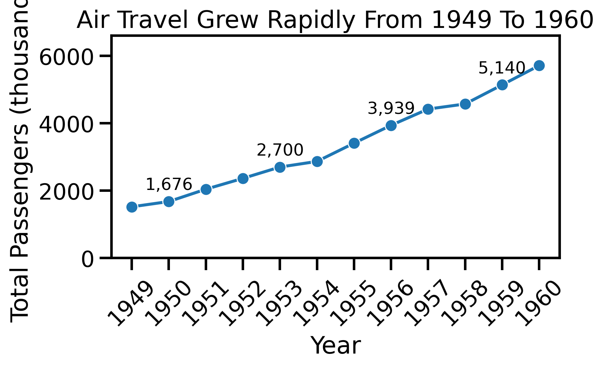
Candidate 2: Multiple Lines With Direct Labels
Labeling the end of each line removes the need to match colors against a legend, which is much easier to follow on a projector.
# Assign one color to each country
health = health[health['Country'].isin(['Japan','Germany','USA'])]
countries = health['Country'].unique()
palette = dict(zip(countries, sns.color_palette('tab10', len(countries))))
# Create a figure and axis object
fig, ax = plt.subplots(figsize=(6, 4))
# One line per country
sns.lineplot(data=health, x='Year', y='Life_Expectancy',
hue='Country', palette=palette, linewidth=3,
legend=False, ax=ax)
# Label the end of each line
for country, group in health.groupby('Country'):
last = group.loc[group['Year'].idxmax()]
ax.text(last['Year'] + 0.7, last['Life_Expectancy'], country,
color=palette[country], va='center', size='small')
# Make room for the labels
ax.set_xlim(1970, 2032)
# Set the title and axis labels
ax.set_title('Japan Pulled Ahead on Life Expectancy')
ax.set_xlabel('Year')
ax.set_ylabel('Life Expectancy (years)')
plt.show()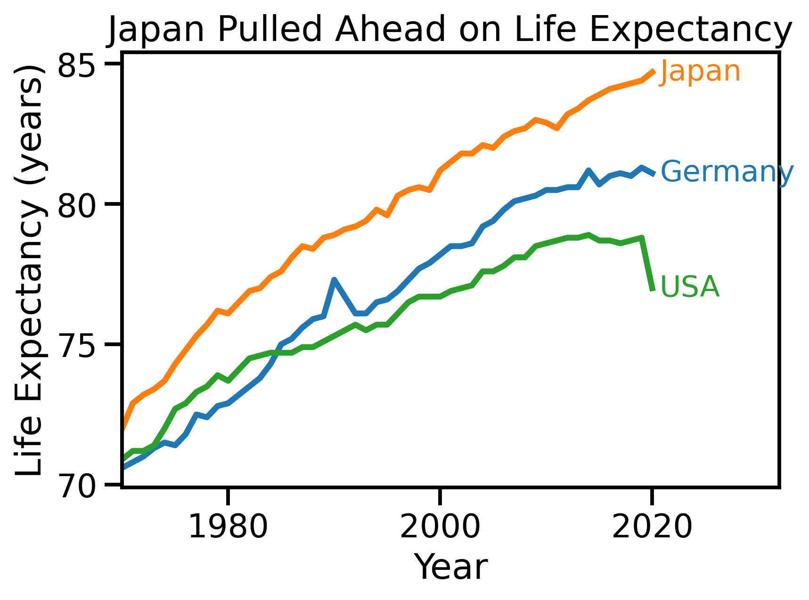
Candidate 3: Annotated Line Chart
An annotation turns a line into a story by pointing at the moment that matters.
# Find the 1929 peak and the low that followed
early = dowjones[dowjones['Date'] < '1940-01-01']
peak = early.loc[early['Price'].idxmax()]
after = early[early['Date'] > peak['Date']]
low = after.loc[after['Price'].idxmin()]
# Find the first month the average climbed back to the peak
recovery = dowjones[(dowjones['Date'] > low['Date']) &
(dowjones['Price'] >= peak['Price'])].iloc[0]
# Create a figure and axis object
fig, ax = plt.subplots(figsize=(6, 4))
# Line chart of the Dow Jones average
sns.lineplot(data=dowjones, x='Date', y='Price', ax=ax)
# Annotate the peak, the low, and the recovery
ax.annotate('Sep 1929 peak: {:.0f}'.format(peak['Price']),
xy=(peak['Date'], peak['Price']),
xytext=(pd.Timestamp('1916-01-01'), 600),
arrowprops={'arrowstyle': '->'}, size='xx-small')
ax.annotate('1932 low: {:.0f}'.format(low['Price']),
xy=(low['Date'], low['Price']),
xytext=(pd.Timestamp('1933-01-01'),325),
arrowprops={'arrowstyle': '->'}, size='xx-small')
ax.annotate('Recovered in {}'.format(recovery['Date'].year),
xy=(recovery['Date'], recovery['Price']),
xytext=(pd.Timestamp('1938-01-01'), 700),
arrowprops={'arrowstyle': '->'}, size='xx-small')
# Set the title and axis labels
ax.set_title('Dow Took 25 Yrs to Recover From 1929 Crash')
ax.set_xlabel('Year')
ax.set_ylabel('Dow Jones Average')
plt.show()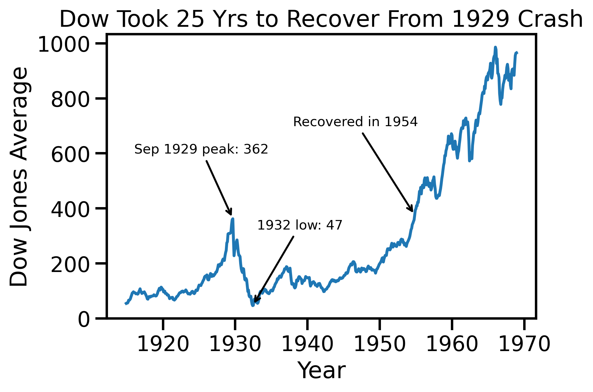
Candidate 4: Line Chart With Uncertainty Bands
When each time point is built from many measurements, Seaborn automatically averages them and shades a 95% confidence interval.
# Create a figure and axis object
fig, ax = plt.subplots(figsize=(6, 3))
# Line chart with confidence band, one line per event type
sns.lineplot(data=fmri, x='timepoint', y='signal',
hue='event', style='event', markers=True,
linewidth=3, ax=ax)
# Set the title and axis labels
ax.set_title('Stimulation Responses Vs Cue Responses')
ax.set_xlabel('Timepoint')
ax.set_ylabel('Average Signal')
ax.legend(title='Event')
plt.show()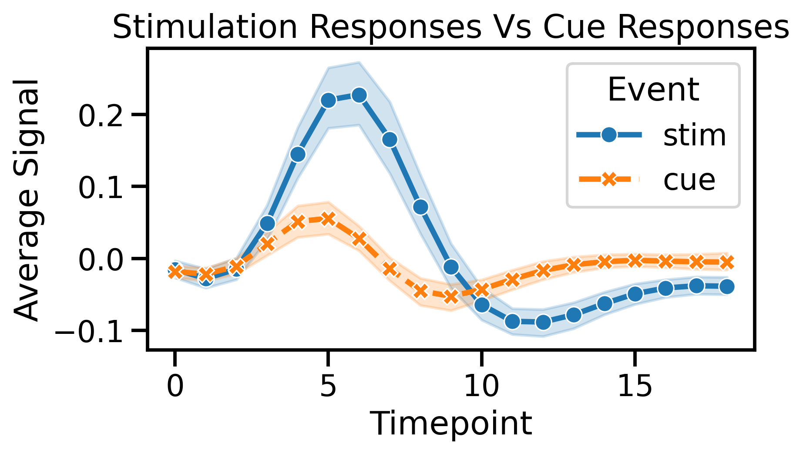
Candidate 5: One Violin Per Year
When a line of averages would hide how the whole distribution moved, draw one violin per period. The line over the violins carries the median.
# Compute the median mpg for each model year
yearly_median = mpg.groupby('model_year')['mpg'].median()
# Create a figure and axis object
fig, ax = plt.subplots(figsize=(6, 4))
# One violin per model year
sns.violinplot(data=mpg, x='model_year', y='mpg', ax=ax)
# Set the title and axis labels
ax.set_title('Fuel Efficiency Jumped After 1979')
ax.set_xlabel('Model Year')
ax.set_ylabel('Fuel Efficiency (MPG)')
ax.set_xticks(range(len(yearly_median)))
ax.set_xticklabels(['19{}'.format(y) for y in yearly_median.index], rotation=45)
plt.show()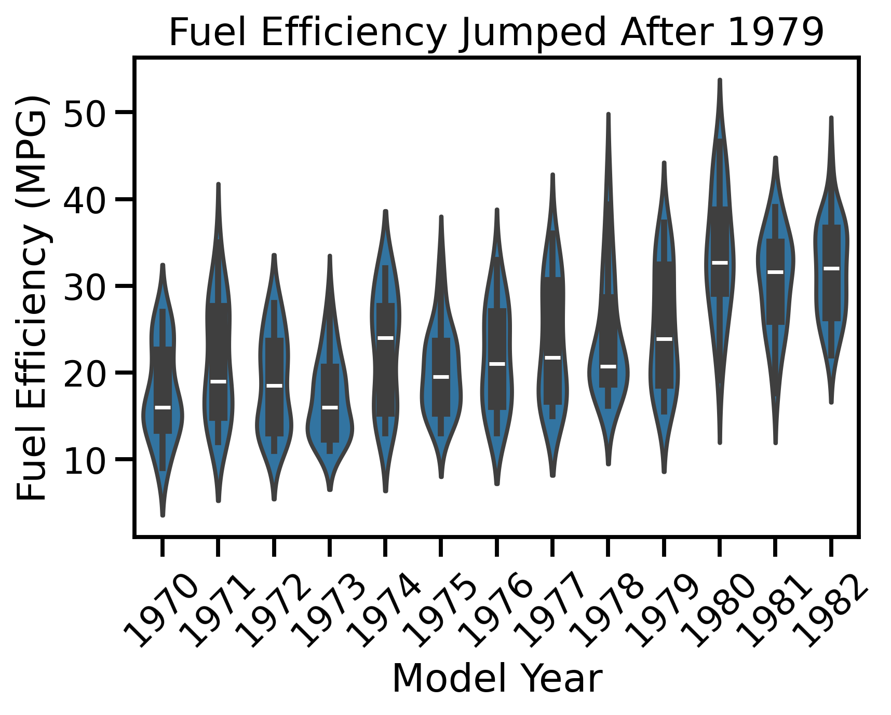
Candidate 6: One Line Per Year to Reveal Seasonality
Drawing each year as its own line, with a sequential color scale, reveals a repeating pattern and shows whether it is growing.
# Create a figure and axis object
fig, ax = plt.subplots(figsize=(5.5, 3))
# One line per year, colored on a sequential palette
sns.lineplot(data=flights, x='month', y='passengers',
hue='year', palette='viridis', linewidth=2.5, ax=ax)
# Move the legend outside the graph area
ax.legend(bbox_to_anchor=(1.02, 1), loc=2, borderaxespad=0.,
title='Year', fontsize='xx-small')
# Set the title and axis labels
ax.set_title('Yearly Patterns Repeat')
ax.set_xlabel('Month')
ax.set_ylabel('Passengers')
# Shrink the x-axis labels so the month names fit
ax.tick_params(axis='x', labelsize='x-small', rotation=45)
plt.show()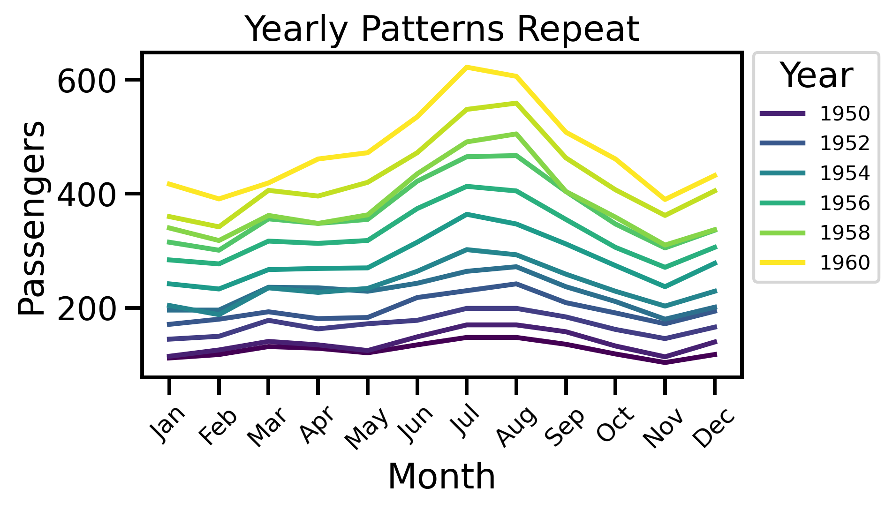
The Correlation Stories
A correlation story answers do these two things move together? Scatter plots show the raw relationship between two numeric variables. When there are too many points, hexbin plots show density instead. When both variables are categorical, cross-tabulate them and show the table as a heat map.
Candidates: Figure 12, Figure 13, Figure 14, Figure 15, Figure 16, Figure 17.
# Load the example datasets used in this section
mpg = sns.load_dataset('mpg')
penguins = sns.load_dataset('penguins')
diamonds = sns.load_dataset('diamonds')
titanic = sns.load_dataset('titanic')
crashes = sns.load_dataset('car_crashes')Candidate 1: Scatter Plot With Trend Line
The classic correlation visual. The trend line and the correlation coefficient give the audience a number to remember.
# Compute the correlation between weight and mpg
r = mpg['weight'].corr(mpg['mpg'])
# Create a figure and axis object
fig, ax = plt.subplots(figsize=(6, 3))
# Scatter plot with a regression line
sns.regplot(data=mpg, x='weight', y='mpg',
scatter_kws={'s': 15, 'alpha': 0.6},
line_kws={'color': 'darkred'}, ax=ax)
# Print the correlation coefficient in the corner
ax.text(0.95, 0.95, 'r = {:.2f}'.format(r),
transform=ax.transAxes, ha='right', va='top', size='small')
# Set the title and axis labels
ax.set_title('Heavier Cars Are Less Efficient')
ax.set_xlabel('Vehicle Weight (lbs)')
ax.set_ylabel('Fuel Efficiency (MPG)')
plt.show()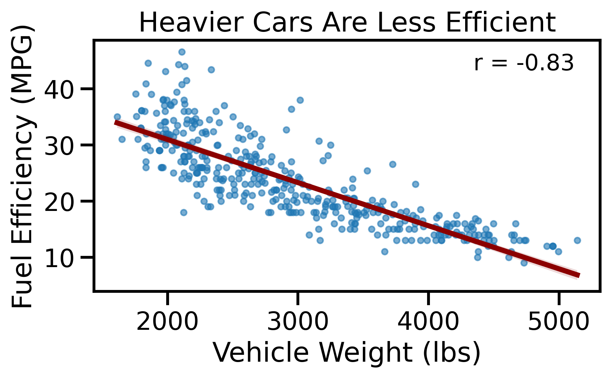
Candidate 2: Scatter Plot That Reverses Within Groups
Color the points by a third variable to show that a correlation can change direction once the groups are separated (Simpson’s paradox). The dashed line is the overall trend.
# Create a figure and axis object
fig, ax = plt.subplots(figsize=(6, 3))
# Scatter plot colored by species
sns.scatterplot(data=penguins, x='bill_length_mm', y='bill_depth_mm',
hue='species', style='species', ax=ax)
# Overall trend line that ignores species
sns.regplot(data=penguins, x='bill_length_mm', y='bill_depth_mm',
scatter=False, color='black',
line_kws={'linestyle': '--'}, ax=ax)
# Move the legend into an empty corner
ax.legend(loc='lower left', fontsize='xx-small')
# Set the title and axis labels
ax.set_title('Overall Trend Reverses Within Species')
ax.set_xlabel('Bill Length (mm)')
ax.set_ylabel('Bill Depth (mm)')
plt.show()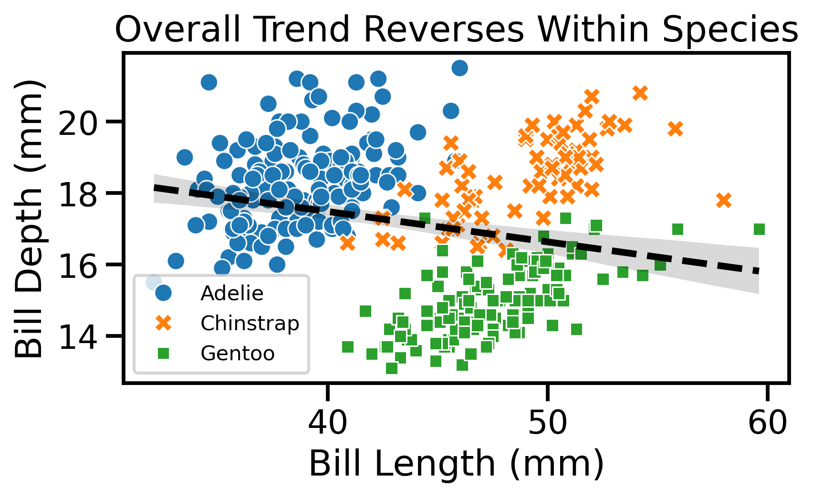
Candidate 3: Hexbin Plot For Crowded Scatter Plots
With tens of thousands of points a scatter plot becomes a solid blob. A hexbin plot counts the points in each hexagon so the density shows through.
# Create a pair of side-by-side axes
fig, axes = plt.subplots(nrows=2, figsize=(6, 5), sharex=True, sharey=True)
# Left: plain scatter plot
sns.scatterplot(data=diamonds, x='carat', y='price',
s=5, ax=axes[0])
axes[0].set_title('Scatter: Overplotted', fontsize='x-small')
# Right: hexbin plot with a log-scaled color bar
hb = axes[1].hexbin(diamonds['carat'], diamonds['price'],
gridsize=30, cmap='Blues', mincnt=1, bins='log')
fig.colorbar(hb, ax=axes[1], label='log10(Diamonds)')
axes[1].set_title('Hexbin: Shows Density', fontsize='x-small')
# Set the axis labels
axes[0].set_xlabel('Carat', fontsize='x-small')
axes[1].set_xlabel('Carat', fontsize='x-small')
axes[0].set_ylabel('Price (US dollars)', fontsize='x-small')
plt.show()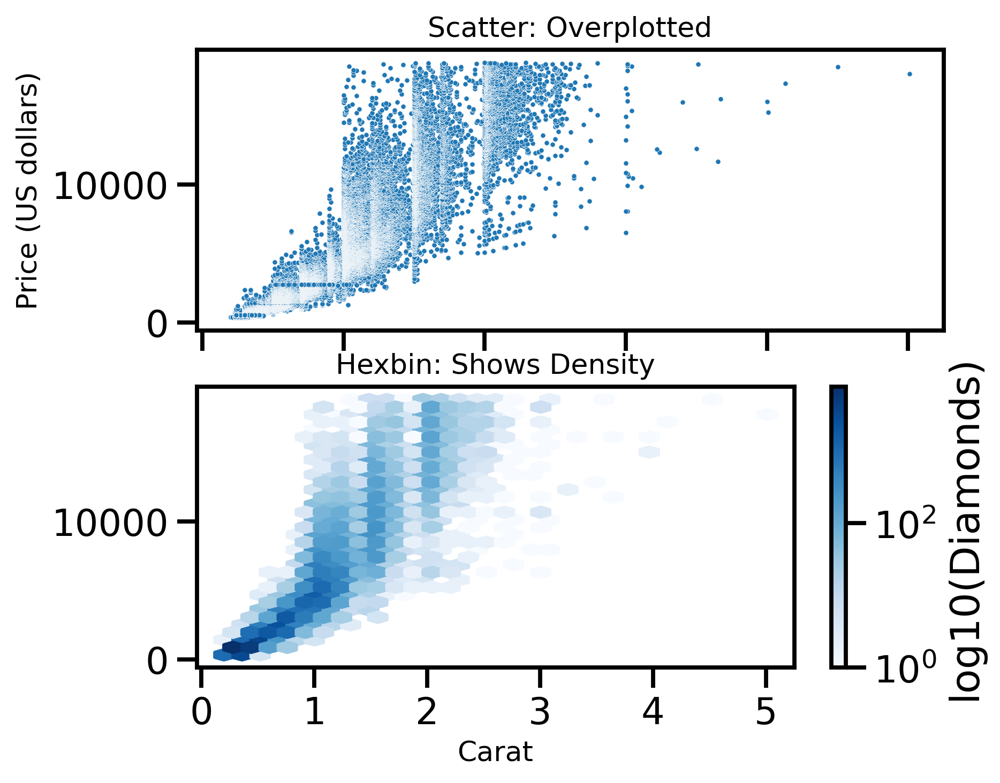
Candidate 4: Correlation Matrix Heat Map
A heat map of correlation coefficients shows many relationships at once. Masking the upper triangle removes the duplicated half.
# Compute the correlation matrix
cols = ['mpg', 'cylinders', 'displacement',
'horsepower', 'weight', 'acceleration']
corr = mpg[cols].corr()
# Hide the upper triangle
mask = np.triu(np.ones_like(corr, dtype=bool), k=1)
# Create a figure and axis object
fig, ax = plt.subplots(figsize=(6, 3))
# Heat map with the coefficients printed in each cell
sns.heatmap(corr, mask=mask, annot=True, fmt='.2f',
cmap='coolwarm', vmin=-1, vmax=1, cbar=False,
annot_kws={'size': 11}, ax=ax)
# Set the title and tick labels
ax.set_title('Heavy Cars Have Low MPG')
ax.tick_params(axis='both', labelsize='x-small')
ax.set_xticklabels(ax.get_xticklabels(), rotation=45)
plt.show()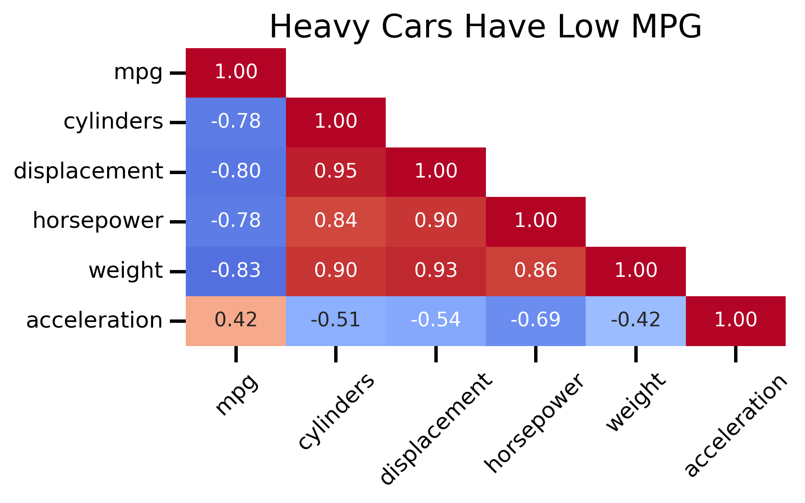
Candidate 5: Cross-Tabulation Heat Map For Categories
When both variables are categorical, count (or take percentages of) every combination with a cross-tabulation, then color the table.
# Cross-tabulate class by port, as a percent of each port
ct = pd.crosstab(titanic['class'], titanic['embark_town'],
normalize='columns').mul(100)
ct = ct.reindex(['First', 'Second', 'Third'])
# Create a figure and axis object
fig, ax = plt.subplots(figsize=(6, 3))
# Build text labels that end with a percent sign
pct_labels = ct.round(0).astype(int).astype(str) + '%'
# Heat map with the percents printed in each cell
sns.heatmap(ct, annot=pct_labels, fmt='', cmap='Blues',
cbar=False, annot_kws={'size': 16}, ax=ax)
# Set the title and axis labels
ax.set_title('Class By Embarkation Point')
ax.set_xlabel('Port of Embarkation (% of port)')
ax.set_ylabel('Passenger Class')
ax.tick_params(axis='both', labelsize='x-small')
plt.show()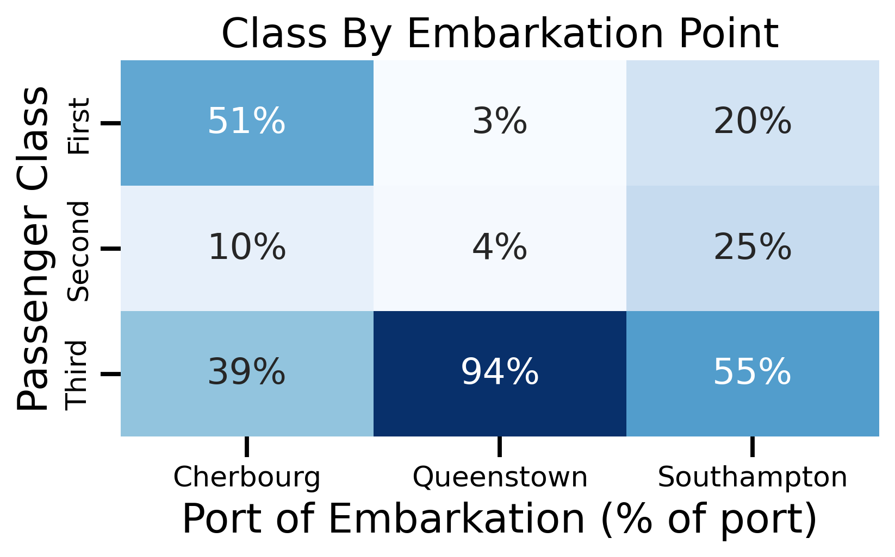
Candidate 6: Bubble Chart
A third numeric variable can ride along as the size of each point.
# Create a figure and axis object
fig, ax = plt.subplots(figsize=(6, 3))
# Bubble chart with speeding as the bubble size
sns.scatterplot(data=crashes, x='alcohol', y='total',
size='speeding', sizes=(20, 300), alpha=0.5,
edgecolor='k', legend='brief', ax=ax)
# Shrink the legend and place it in an empty corner
sns.move_legend(ax, 'lower right', fontsize='xx-small',
title='Speeding', title_fontsize='xx-small')
# Set the title and axis labels
ax.set_title('More Alcohol, More Fatal Crashes')
ax.set_xlabel('Alcohol-Impaired Crashes (per billion miles)', fontsize='x-small')
ax.set_ylabel('Fatal Crashes (per bil miles)', fontsize='x-small')
ax.xaxis.label.set_size('small')
ax.yaxis.label.set_size('small')
plt.show()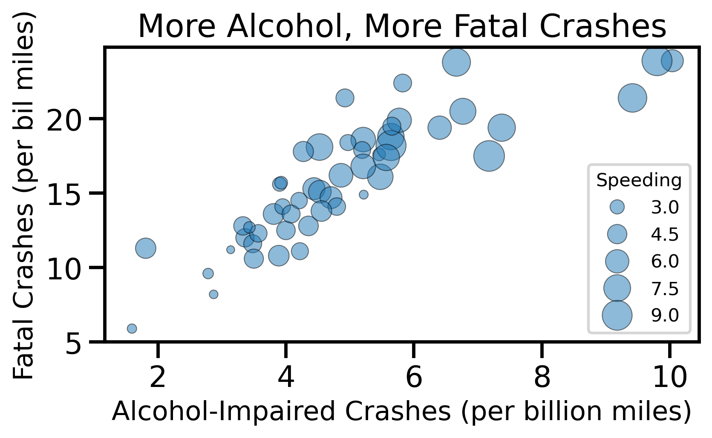
The Distribution Stories
A distribution story answers what does this one variable look like? Where is the center, how wide is the spread, is it skewed, does it have more than one peak? Histograms, solo box plots, and solo violin plots are the workhorses.
Candidates: Figure 18, Figure 19, Figure 20, Figure 21, Figure 22, Figure 23.
# Load the example datasets used in this section
diamonds = sns.load_dataset('diamonds')
tips = sns.load_dataset('tips')
titanic = sns.load_dataset('titanic')
geyser = sns.load_dataset('geyser')Candidate 1: Histogram With Mean And Median
When a distribution is skewed, the mean and the median disagree. Marking both lines makes the skew visible.
# Compute the mean and median price
mean_price = diamonds['price'].mean()
median_price = diamonds['price'].median()
# Create a figure and axis object
fig, ax = plt.subplots(figsize=(6, 3))
# Histogram with a density curve
sns.histplot(data=diamonds, x='price', bins=40, kde=True, ax=ax)
# Mark the median and the mean
# ax.axvline(median_price, color='darkred', linestyle='--',
# label='Median: ${:,.0f}'.format(median_price))
# ax.axvline(mean_price, color='black', linestyle=':',
# label='Mean: ${:,.0f}'.format(mean_price))
# ax.legend(fontsize='x-small')
# Set the title and axis labels
ax.set_title('Diamond Prices Skew Right')
ax.set_xlabel('Price (US dollars)')
ax.set_ylabel('Number of Diamonds')
plt.show()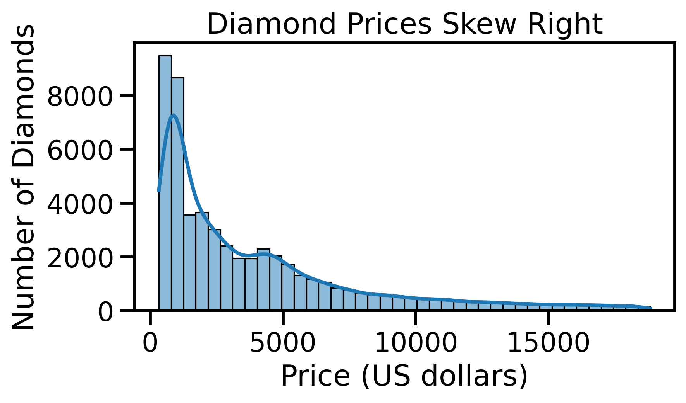
Candidate 2: Same Data, Different Bin Counts
The number of bins is a choice, and the choice changes the story. This is a good figure for teaching that point.
# Three bin counts to compare
bin_counts = [5, 15, 40]
# Create a row of three axes
fig, axes = plt.subplots(nrows=3, figsize=(6, 9))
# Draw the same histogram with a different number of bins in each
for ax, b in zip(axes, bin_counts):
sns.histplot(data=tips, x='total_bill', bins=b, ax=ax)
ax.set_title('{} Bins'.format(b))
ax.set_xlabel('Bill (dollars)')
ax.set_ylabel('Number of Bills')
# Label the shared y axis once
fig.suptitle('Bin Count Changes What You See', y=1.03)
plt.tight_layout()
plt.show()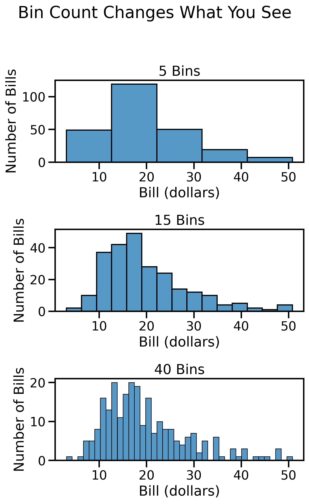
Candidate 3: Solo Box Plot With Labeled Quartiles
A single box plot with the key values printed on it lets the audience read the numbers instead of estimating them.
# Compute the quartiles
q1, med, q3 = tips['total_bill'].quantile([0.25, 0.5, 0.75])
# Create a figure and axis object
fig, ax = plt.subplots(figsize=(6, 3))
# Single horizontal box plot
sns.boxplot(data=tips, x='total_bill', width=0.4,
color=sns.color_palette('pastel')[0], ax=ax)
# Label each quartile below the box
# for label, val in [('Q1', q1), ('Median', med), ('Q3', q3)]:
for val in [q1, med, q3]:
ax.text(val*.85, 0.2, '${:.2f}'.format(val),
transform=ax.get_xaxis_transform(),
ha='center', va='center', size='xx-small',
rotation=45)
for val, label in zip([q1, med, q3], ['25th Pctl', '50th Pctl', '75th Pctl']):
ax.text(val*.95, .83, label,
transform=ax.get_xaxis_transform(),
ha='left', va='center', size='xx-small',
rotation=45)
# Set the title and axis labels
ax.set_title('Half Of Bills Between ${:.0f} - ${:.0f}'.format(q1, q3))
ax.set_xlabel('Total Bill (dollars)')
ax.set_yticks([])
plt.show()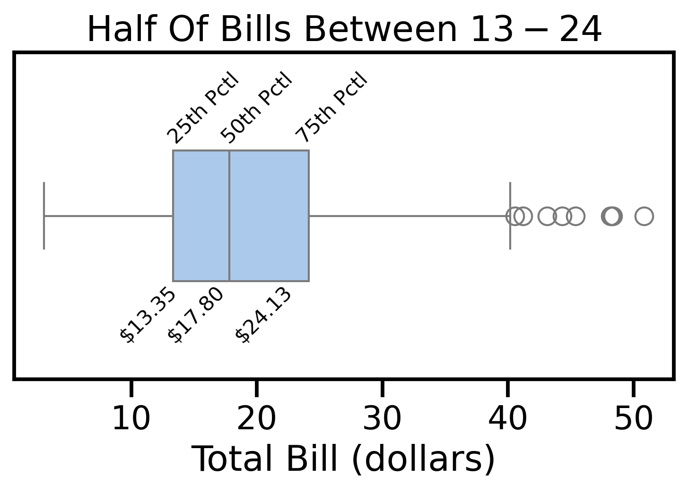
Candidate 4: Solo Violin Plot
A single violin shows the shape that a single box plot hides. Here the quartiles are drawn inside the violin and printed beside it.
# Compute the quartiles
q1, med, q3 = titanic['age'].quantile([0.25, 0.5, 0.75])
# Create a figure and axis object
fig, ax = plt.subplots(figsize=(5, 5))
# Single violin plot, trimmed so ages stop at the data
sns.violinplot(data=titanic, y='age', inner='quart', cut=0,
color=sns.color_palette('pastel')[0], ax=ax)
# Label each quartile beside the violin
for label, val in [('Q3', q3), ('Median', med), ('Q1', q1)]:
ax.text(0.45, val, '{}: {:.0f}'.format(label, val),
va='center', size='small')
# Set the title and axis labels
ax.set_title('Half Of Passengers Were {:.0f} To {:.0f}'.format(q1, q3))
ax.set_ylabel('Age (years)')
ax.set_xlim(-0.5, 1.1)
ax.set_xticks([])
plt.show()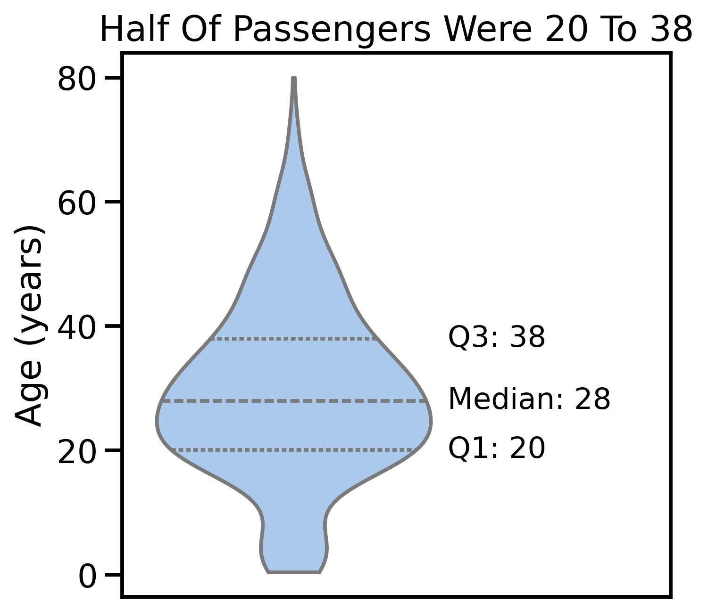
Candidate 5: Cumulative Distribution
An ECDF answers “what share of the data falls below this value?” directly. It is a favorite when the audience needs to read percentiles.
# Compute the median bill
median_bill = tips['total_bill'].median()
# Create a figure and axis object
fig, ax = plt.subplots(figsize=(6, 4))
# Empirical cumulative distribution
sns.ecdfplot(data=tips, x='total_bill', linewidth=3, ax=ax)
# Mark the median
ax.axhline(0.5, color='gray', linestyle=':')
ax.axvline(median_bill, color='gray', linestyle=':')
ax.text(median_bill + 1, 0.35, '50% of bills are\nunder ${:.2f}'.format(median_bill),
size='x-small')
# Set the title and axis labels
ax.set_title('Half Of Bills Are Under ${:.2f}'.format(median_bill))
ax.set_xlabel('Total Bill (dollars)')
ax.set_ylabel('Share Of Bills')
plt.show()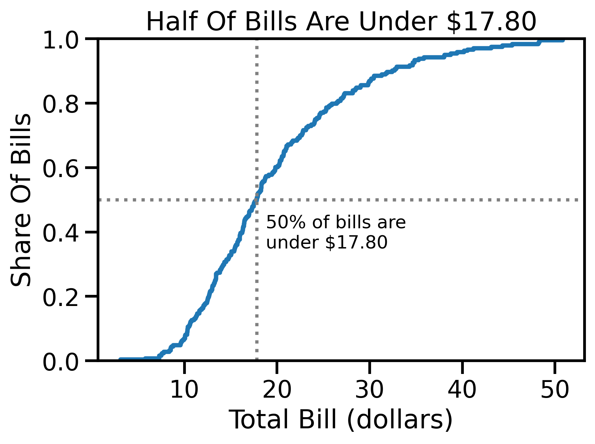
Candidate 6: A Distribution With Two Peaks
Some distributions have more than one peak. Here the mean falls in the valley between the peaks, which makes it a poor summary.
# Compute the mean waiting time
mean_wait = geyser['waiting'].mean()
# Create a figure and axis object
fig, ax = plt.subplots(figsize=(6, 3))
# Histogram with a density curve
sns.histplot(data=geyser, x='waiting', bins=20, kde=True, ax=ax)
# Mark the mean
ax.axvline(mean_wait, color='darkred', linestyle='--',
label='Mean: {:.0f} min'.format(mean_wait))
ax.legend(fontsize='x-small', loc='upper left')
# Set the title and axis labels
ax.set_title('Geyser Waits Have Two Peaks')
ax.set_xlabel('Minutes Between Eruptions')
ax.set_ylabel('Number of Eruptions')
plt.show()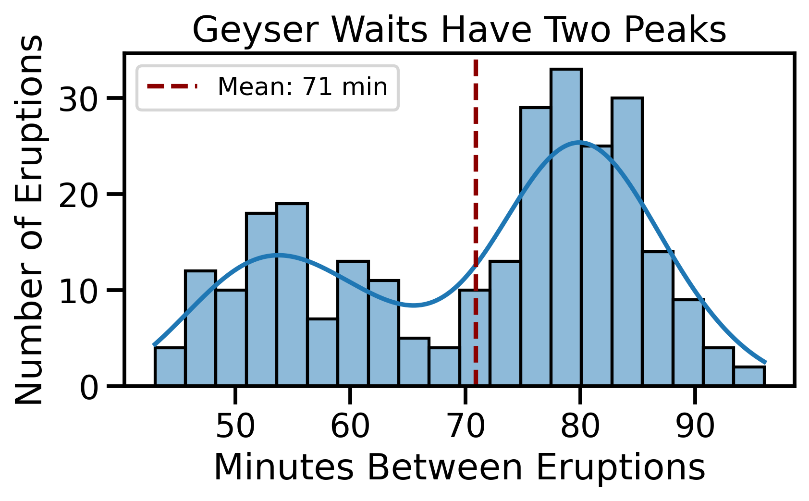
The Composition Stories
A composition story answers what are the parts of the whole? Pie and donut charts work when there are only a few parts and the audience needs a rough share. Stacked bars show composition across several groups, and proportional (100%) stacked bars make the shares comparable even when the group sizes differ.
Candidates: Figure 24, Figure 25, Figure 26, Figure 27, Figure 28, Figure 29.
# Import the patch class used for the waffle chart legend
from matplotlib.patches import Patch
# Load the example datasets used in this section
titanic = sns.load_dataset('titanic')
penguins = sns.load_dataset('penguins')
mpg = sns.load_dataset('mpg')
# Pastel colors shared by every chart in this section
colors = sns.color_palette('pastel')Candidate 1: Pie Chart
Use a pie chart only when there are a few slices and the point is a rough share of the whole. Percent labels on the slices keep the audience from guessing.
# Count the passengers in each class
class_counts = titanic['class'].value_counts()
# Create a figure and axis object
fig, ax = plt.subplots(figsize=(5, 4))
# Pie chart with percent labels
ax.pie(class_counts, labels=class_counts.index.astype(str),
autopct='%1.0f%%', startangle=90, counterclock=False,
colors=colors, wedgeprops={'edgecolor': 'white'},
textprops={'size': 'small'})
# Set the title
ax.set_title('Most Passengers Rode Third Class')
plt.show()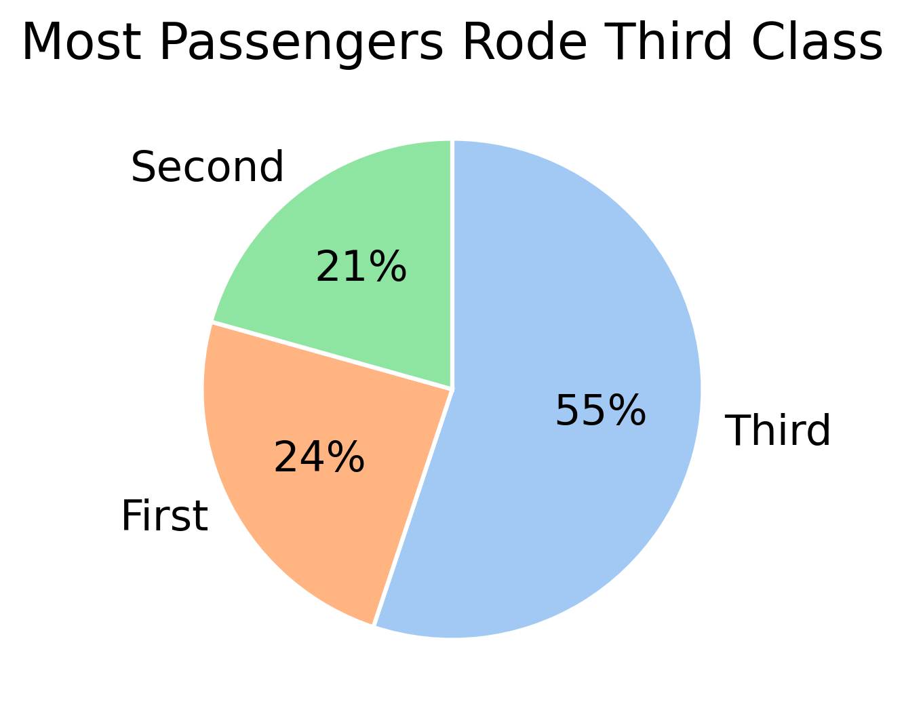
Candidate 2: Donut Chart
A donut chart is a pie chart with the middle removed. The hole is a convenient place to print the total.
# Count the penguins of each species
species_counts = penguins['species'].value_counts()
# Create a figure and axis object
fig, ax = plt.subplots(figsize=(5, 4))
# Donut chart: a pie with a narrow ring width
ax.pie(species_counts, labels=species_counts.index,
autopct='%1.0f%%', startangle=90, counterclock=False,
colors=colors, pctdistance=0.8,
wedgeprops={'width': 0.4, 'edgecolor': 'white'},
textprops={'size': 'small'})
# Print the total in the center
ax.text(0, 0, 'n = {}'.format(species_counts.sum()),
ha='center', va='center', size='large')
# Set the title
ax.set_title('Adelie Is The Largest Species Share')
plt.show()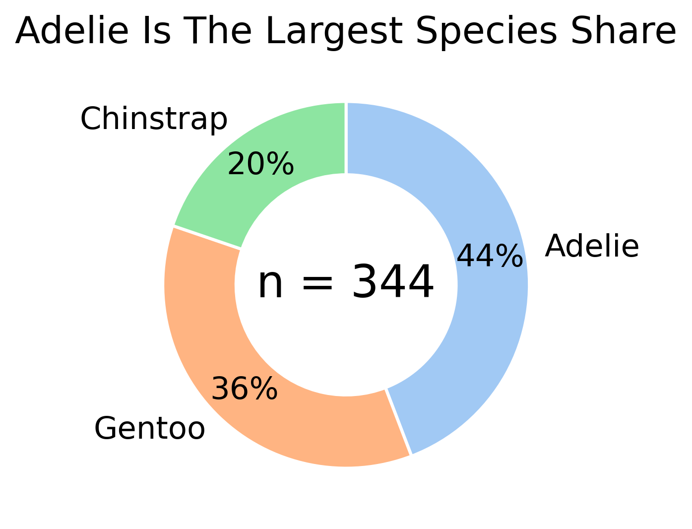
Candidate 3: Stacked Bar Chart
A stacked bar chart shows both the total for each group and how each total breaks down. Label the segments and the totals.
# Cross-tabulate island by species
ct = pd.crosstab(penguins['island'], penguins['species'])
# Create a figure and axis object
fig, ax = plt.subplots(figsize=(6, 3))
# Stacked bar chart
ct.plot(kind='bar', stacked=True, color=colors[:3], rot=0, ax=ax)
# Label each segment, leaving empty segments blank
for container in ax.containers:
labels = ['' if v == 0 else str(int(v)) for v in container.datavalues]
ax.bar_label(container, labels=labels, label_type='center', size='small')
# Label the total above each bar
for i, total in enumerate(ct.sum(axis=1)):
ax.text(i, total + 4, str(total), ha='center', size='small')
# Set the title and axis labels
ax.set_title('Only Adelie Live On Torgersen')
ax.set_xlabel('Island')
ax.set_ylabel('Number of Penguins')
ax.set_ylim(0, 190)
ax.legend(title='Species', fontsize='x-small', title_fontsize='x-small')
plt.show()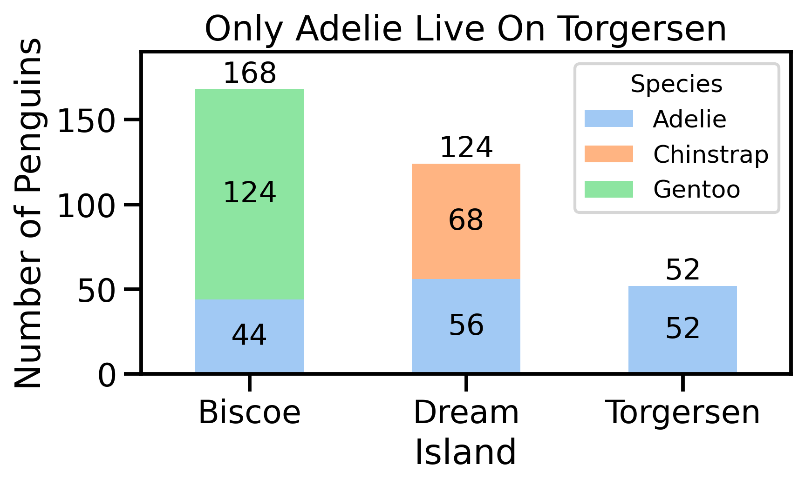
Candidate 4: Proportional Stacked Bar Chart
When group sizes differ, converting every bar to 100% makes the shares directly comparable.
# Cross-tabulate class by outcome, as a percent of each class
ct = pd.crosstab(titanic['class'], titanic['alive'], normalize='index').mul(100)
ct = ct.rename(columns={'yes': 'Survived', 'no': 'Did Not Survive'})
ct = ct[['Survived', 'Did Not Survive']]
# Create a figure and axis object
fig, ax = plt.subplots(figsize=(6, 3))
# Proportional stacked bar chart
ct.plot(kind='bar', stacked=True, color=colors[:2], rot=0, ax=ax)
# Label each segment with its percent
for container in ax.containers:
ax.bar_label(container, fmt='%.0f%%', label_type='center', size='small')
# Set the title and axis labels
ax.set_title('First Class Survived Most Often')
ax.set_xlabel('Passenger Class')
ax.set_ylabel('Share of Passengers (%)')
ax.legend(loc='upper center', bbox_to_anchor=(0.5, -0.25),
ncol=2, fontsize='x-small')
plt.show()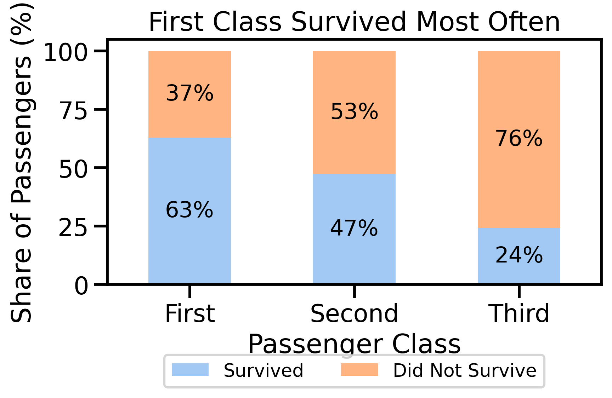
Candidate 5: Horizontal Proportional Stacked Bar Chart
Horizontal bars leave room for long group names and many segments. Hiding the labels on the tiniest segments keeps the chart readable.
# Cross-tabulate origin by cylinders, as a percent of each origin
ct = pd.crosstab(mpg['origin'], mpg['cylinders'], normalize='index').mul(100)
ct.index = ct.index.str.title()
# Create a figure and axis object
fig, ax = plt.subplots(figsize=(6, 3))
# Horizontal proportional stacked bar chart
ct.plot(kind='barh', stacked=True, color=colors[:5], ax=ax)
# Label each large segment with its percent
for container in ax.containers:
labels = ['{:.0f}%'.format(v) if v >= 6 else '' for v in container.datavalues]
ax.bar_label(container, labels=labels, label_type='center', size='x-small')
# Put the first group at the top
ax.invert_yaxis()
# Set the title and axis labels
ax.set_title('US Cars Use Bigger Engines')
ax.set_xlabel('Share of Cars (%)')
ax.set_ylabel('')
ax.legend(title='Cylinders', loc='upper center', bbox_to_anchor=(0.5, -0.25),
ncol=5, fontsize='x-small', title_fontsize='x-small')
plt.show()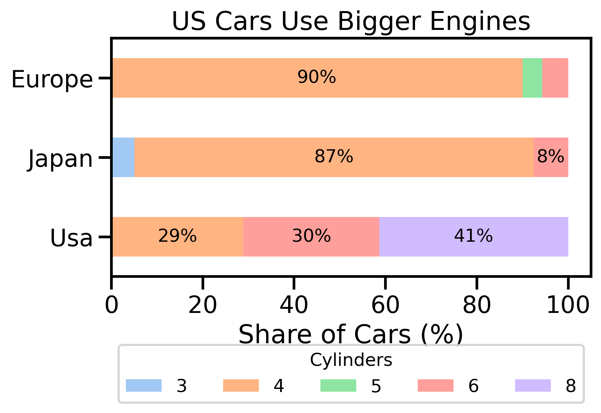
Candidate 6: Waffle Chart
A waffle chart is a pie chart you can count. Each square is one percent of the whole, which makes it easy to say “about 4 in 10.”
# Compute the percent of passengers who survived, rounded to a whole number
survived_pct = int(round(titanic['survived'].mean() * 100))
# Create a figure and axis object
fig, ax = plt.subplots(figsize=(6, 3))
# Draw a 10 by 10 grid of squares, filling from the top left
for i in range(100):
row, col = divmod(i, 10)
color = colors[0] if i < survived_pct else 'lightgray'
ax.add_patch(plt.Rectangle((col, 9 - row), 0.9, 0.9, color=color))
# Tidy the axes
ax.set_xlim(0, 10)
ax.set_ylim(0, 10)
ax.set_aspect('equal')
ax.axis('off')
# Add a legend and title
ax.legend(handles=[Patch(color=colors[0], label='Survived'),
Patch(color='lightgray', label='Did Not Survive')],
loc='upper center', bbox_to_anchor=(0.5, 0), ncol=2,
fontsize='x-small')
ax.set_title('About {} In 10 Passengers Survived'.format(round(survived_pct / 10)))
plt.show()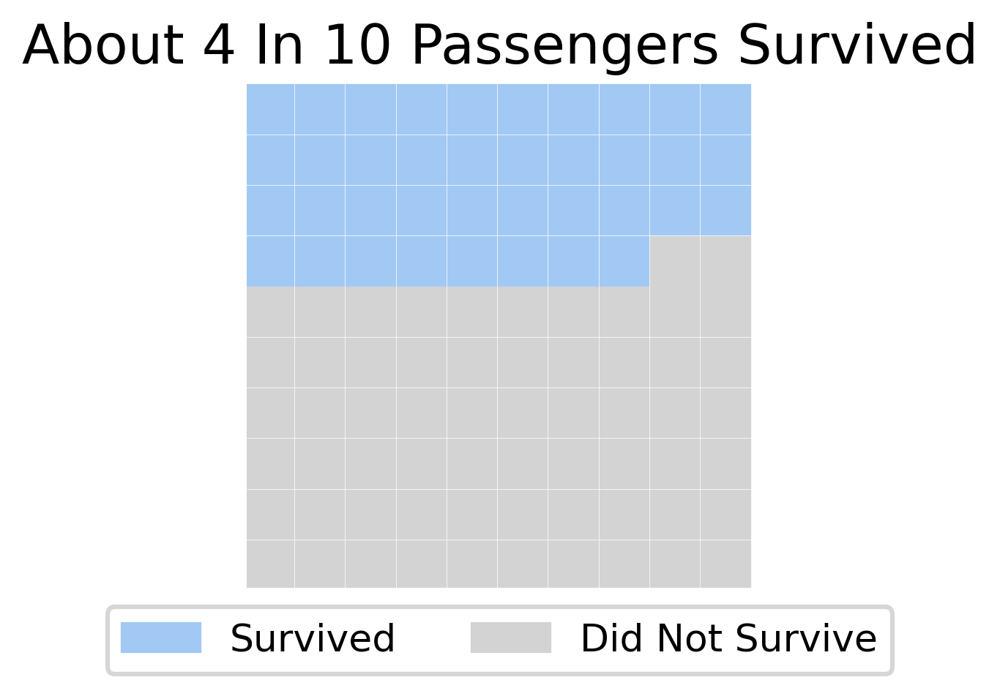
The Ranking Stories
A ranking story answers who or what is best, and who or what is worst? Think of the review summary on a shopping website, a board game leader board, or a list of the most efficient machines. Sort the items, make the order obvious, and label the values.
Candidates: Figure 30, Figure 31, Figure 32, Figure 33, Figure 34, Figure 35.
Candidate 1: Customer Review Summary
This is the star summary found on shopping websites. The data are fictional.
# Fictional counts of reviews at each star level
stars = pd.DataFrame({
'rating': [5, 4, 3, 2, 1],
'reviews': [612, 301, 118, 54, 41]})
# Build a row of solid star characters for each rating
stars['label'] = ['\u2605' * r for r in stars['rating']]
# Compute the share of reviews and the average rating
stars['pct'] = stars['reviews'] / stars['reviews'].sum() * 100
avg_rating = (stars['rating'] * stars['reviews']).sum() / stars['reviews'].sum()
# Create a figure and axis object
fig, ax = plt.subplots(figsize=(6, 3))
# Horizontal bars for each star level
sns.barplot(data=stars, x='pct', y='label', orient='h',
color='#f4b400', ax=ax)
# Label each bar with its percent and count
for i, row in stars.iterrows():
ax.text(row['pct'] + 1.5, i,
'{:.0f}% ({:,})'.format(row['pct'], row['reviews']),
va='center', size='x-small')
# Set the title and axis labels
ax.set_title('{:.1f} Out Of 5 Stars ({:,} Reviews)'.format(
avg_rating, stars['reviews'].sum()))
ax.set_xlabel('Share of Reviews (%)')
ax.set_ylabel('')
ax.set_xlim(0, 100)
# Color the stars gold
for tick_label in ax.get_yticklabels():
tick_label.set_color('#f4b400')
sns.despine()
plt.show()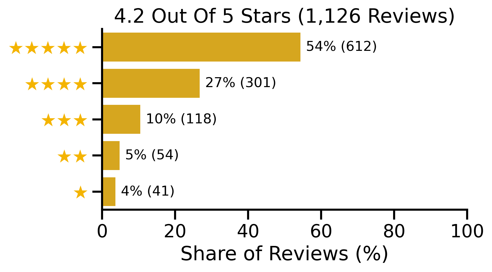
Candidate 2: Rating Comparison Across Products
Pair each rating with the number of reviews behind it so the audience can judge how much to trust it. The data are fictional.
# Fictional average ratings and review counts
products = pd.DataFrame({
'product': ['TrailMix Pro', 'AquaBottle 2', 'PeakPack 30L',
'SummitStove', 'CampLite Lantern', 'HikeMate Poles'],
'rating': [4.7, 4.5, 4.4, 4.2, 3.9, 3.6],
'reviews': [1204, 3410, 982, 457, 2216, 313]})
# Put the rank in each label so every label is unique
products['label'] = ['{}'.format(p)
for i, p in enumerate(products['product'])]
# Create a figure and axis object
fig, ax = plt.subplots(figsize=(6, 3))
# Horizontal bars sorted by rating
sns.barplot(data=products, x='rating', y='label', orient='h',
color='#f4b400', ax=ax)
for i, row in products.iterrows():
# Annotate the product name on its bar, left aligned at x = 0.1
ax.text(0.1, i, row['product'],
ha='left', va='center', size='x-small')
# Label each bar with the rating and the review count
ax.text(row['rating'] * .65, i,
'{:.1f} \u2605 ({:,})'.format(row['rating'], row['reviews']),
va='center', size='xx-small')
# Set the title and axis labels
ax.set_title('TrailMix Pro Tops Customer Ratings')
ax.set_xlabel('Average Rating (out of 5)')
ax.set_ylabel('')
ax.set_xlim(0, 6.2)
ax.set_xticks(range(0, 6))
# Remove the y-axis labels since the names are on the bars
ax.set_yticks([])
sns.despine(left=True)
plt.show()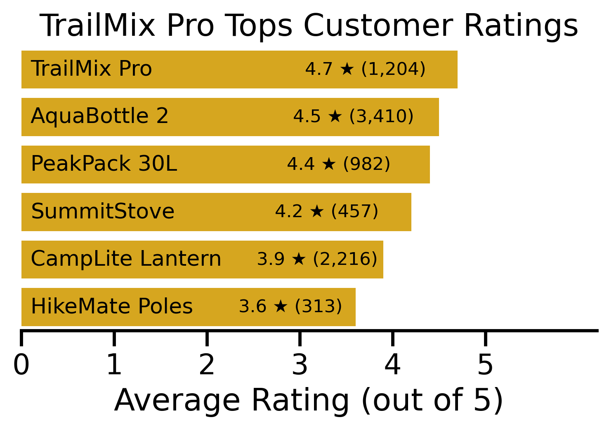
Candidate 3: Board Game Leader Board
Gold, silver, and bronze colors make the podium obvious without a legend. The data are fictional.
# Fictional final scores, highest first
scores = pd.DataFrame({
'player': ['Maya', 'Jonas', 'Priya', 'Theo', 'Lena', 'Omar'],
'points': [87, 79, 74, 61, 58, 42]})
scores['label'] = ['{}. {}'.format(i + 1, p)
for i, p in enumerate(scores['player'])]
# Medal colors for the top three and gray for everyone else
medals = ['#d4af37', '#a8a9ad', '#cd7f32'] + ['lightgray'] * 3
# Create a figure and axis object
fig, ax = plt.subplots(figsize=(6, 3))
# Horizontal bars colored by finishing place
sns.barplot(data=scores, x='points', y='label', hue='label',
palette=dict(zip(scores['label'], medals)),
orient='h', legend=False, ax=ax)
for i, row in scores.iterrows():
# Annotate the rank and player name on the bar, left aligned
ax.text(1.5, i, row['label'],
ha='left', va='center', size='x-small')
# Label each bar with the score
ax.text(row['points'] + 1, i, str(row['points']),
va='center', size='small')
# Set the title and axis labels
ax.set_title('{} Wins With {} Points'.format(
scores['player'][0], scores['points'][0]))
ax.set_xlabel('Final Score')
ax.set_ylabel('')
ax.set_xlim(0, 100)
# Remove the y-axis labels since the names are on the bars
ax.set_yticks([])
sns.despine(left=True)
plt.show()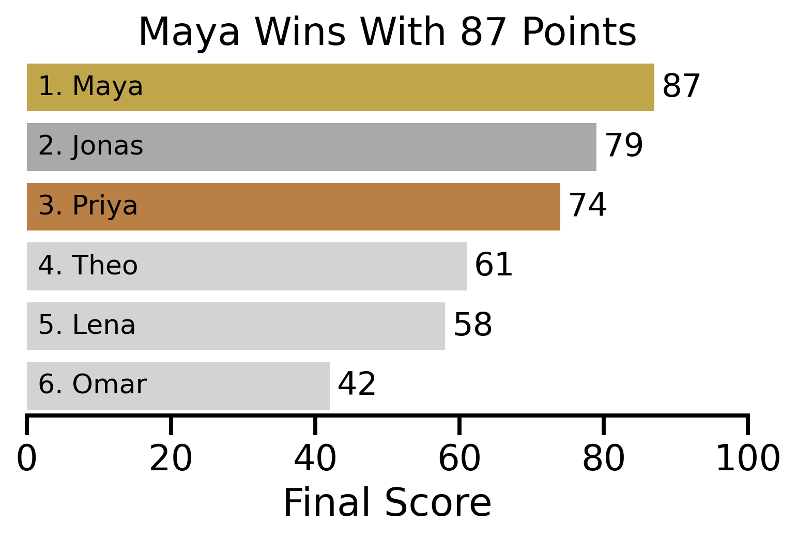
Candidate 4: Most Efficient Leader Board
Rank by efficiency rather than by size. The best performer gets a highlight color and the rest share a muted one.
# Load the mpg dataset
mpg = sns.load_dataset('mpg')
# Select the ten most efficient vehicles
top = mpg.nlargest(10, 'mpg').reset_index(drop=True)
# Put the rank, name, and model year in each label
top['label'] = ['{}. {} (19{})'.format(i + 1, name.title(), year)
for i, (name, year) in enumerate(zip(top['name'], top['model_year']))]
# Create a figure and axis object
fig, ax = plt.subplots(figsize=(6, 3))
# Horizontal bars in a muted color
sns.barplot(data=top, x='mpg', y='label', orient='h',
color='lightsteelblue', ax=ax)
# Highlight the most efficient vehicle
ax.patches[0].set_facecolor('#d4af37')
for i, row in top.iterrows():
# Annotate the rank, name, and year on the bar, left aligned
ax.text(0.5, i, row['label'],
ha='left', va='center', size='xx-small')
# Label each bar with its mpg
ax.text(row['mpg'] + 0.5, i, '{:.1f}'.format(row['mpg']),
va='center', size='x-small')
# Set the title and axis labels
ax.set_title('Top 10 Most Fuel-Efficient Vehicles')
ax.set_xlabel('Fuel Efficiency (MPG)')
ax.set_ylabel('')
ax.set_xlim(0, 55)
# Remove the y-axis labels since the names are on the bars
ax.set_yticks([])
sns.despine(left=True)
plt.show()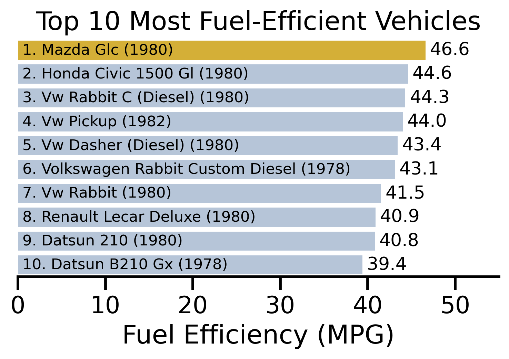
Candidate 5: Lollipop Chart
A lollipop chart carries the same information as a bar chart with far less ink, which helps when the list is long.
# Load the car crashes dataset
crashes = sns.load_dataset('car_crashes')
# Select the ten highest states, sorted so the highest plots at the top
worst = crashes.nlargest(10, 'total').sort_values('total').reset_index(drop=True)
# Create a figure and axis object
fig, ax = plt.subplots(figsize=(6, 3))
# Draw the sticks and the candy
ax.hlines(y=worst.index, xmin=0, xmax=worst['total'],
color='lightgray', linewidth=3)
ax.plot(worst['total'], worst.index, 'o', markersize=10, color='darkred')
# Label each lollipop with its value
for i, v in enumerate(worst['total']):
ax.text(v + 0.5, i, '{:.1f}'.format(v), va='center', size='x-small')
# Label the rows with state abbreviations
ax.set_yticks(worst.index)
ax.set_yticklabels(worst['abbrev'])
# Set the title and axis labels
ax.set_title('Top 10 States By Fatal Crash Rate')
ax.set_xlabel('Fatal Crashes (per billion miles)')
ax.set_xlim(0, 28)
sns.despine()
plt.show()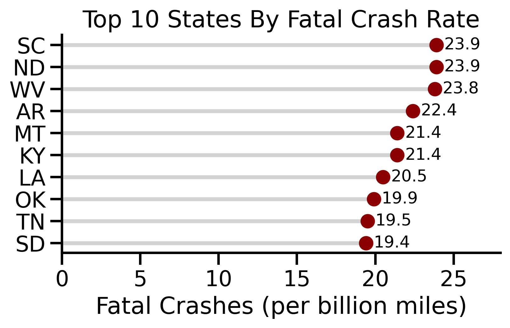
Candidate 6: Bump Chart
A bump chart shows how a ranking changes over time, so it tells a story about winners and losers rather than a single snapshot.
# Load the health expenditure dataset
health = sns.load_dataset('healthexp')
# Reshape to one column per country and fill in any missing years
wide = health.pivot(index='Year', columns='Country', values='Life_Expectancy')
wide = wide.reindex(range(1970, 2021)).interpolate(limit_direction='both')
# Rank the countries at the start of each decade (1 = highest)
years = [1970, 1980, 1990, 2000, 2010, 2020]
ranks = wide.loc[years].rank(axis=1, ascending=False)
# Assign one color to each country
palette = dict(zip(ranks.columns, sns.color_palette('tab10', len(ranks.columns))))
# Create a figure and axis object
fig, ax = plt.subplots(figsize=(6, 3))
# One line per country, labeled at the right end
for country in ranks.columns:
ax.plot(ranks.index, ranks[country], marker='o', linewidth=3,
color=palette[country])
ax.text(2021.5, ranks.loc[2020, country], country,
color=palette[country], va='center', size='x-small')
# Put rank 1 at the top
ax.invert_yaxis()
# Set the title and axis labels
ax.set_title('Japan Rose To #1 While The USA Fell To Last')
ax.set_xlabel('Year')
ax.set_ylabel('Rank (1 = Highest)')
ax.set_xticks(years)
ax.set_yticks(range(1, 7))
ax.set_xlim(1968, 2032)
sns.despine()
plt.show()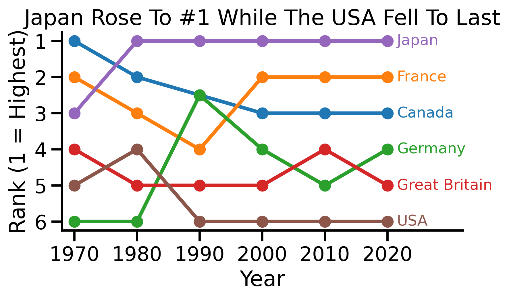
The Process Or Status Stories
A process or status story answers where are we right now? It reports the current state of a procedure, a measurement, or a flow against a goal. Dials, meters, progress bars, and flow diagrams all do this job. Seaborn has no built-in status graphics, so these examples use Matplotlib shapes. All of the values are fictional.
Candidates: Figure 36, Figure 37, Figure 38, Figure 39, Figure 40, Figure 41, Figure 42.
# Import the Matplotlib shapes used to draw the dials and meters
from matplotlib.patches import Wedge, Rectangle, Circle
# Load the Titanic dataset for the Sankey diagram
titanic = sns.load_dataset('titanic')Candidate 1: Gauge
A half-donut gauge shows a single percentage against a goal. It is simple, familiar, and needs no explanation.
# A fictional on-time delivery rate
value = 78
# Create a figure and axis object
fig, ax = plt.subplots(figsize=(5, 3))
# Half donut: value, remainder, and an invisible lower half
ax.pie([value, 100 - value, 100], colors=['seagreen', 'lightgray', 'none'],
startangle=180, counterclock=False,
wedgeprops={'width': 0.3, 'edgecolor': 'none'})
# Print the value in the middle of the arc
ax.text(0, 0.1, '{}%'.format(value), ha='center', va='center', size='xx-large')
# Show only the top half
ax.set_ylim(-0.1, 1.1)
# Set the title
ax.set_title('On-Time Delivery Rate')
plt.show()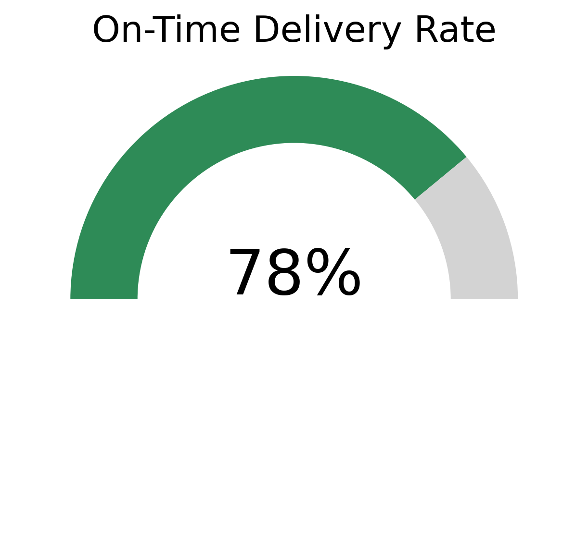
Candidate 2: Speedometer
A needle on a dial with colored zones shows not only the current value but also whether it is in a safe range.
# A fictional current speed and the top of the dial
speed = 62
top_speed = 120
# Colored zones as (start, end, color)
zones = [(0, 60, '#a8e6a1'), (60, 90, '#ffe08a'), (90, 120, '#f4a6a6')]
# Create a figure and axis object
fig, ax = plt.subplots(figsize=(5, 3.5))
# Draw each zone as a ring segment (180 degrees is zero, 0 degrees is top speed)
for start, end, color in zones:
ax.add_patch(Wedge((0, 0), 1, 180 - 180 * end / top_speed,
180 - 180 * start / top_speed, width=0.3,
facecolor=color, edgecolor='white'))
# Number the dial every 20 mph
for v in range(0, top_speed + 1, 20):
angle = np.radians(180 - 180 * v / top_speed)
ax.text(1.15 * np.cos(angle), 1.15 * np.sin(angle), str(v),
ha='center', va='center', size='x-small')
# Draw the needle and its hub
angle = np.radians(180 - 180 * speed / top_speed)
ax.plot([0, 0.85 * np.cos(angle)], [0, 0.85 * np.sin(angle)],
color='black', linewidth=3)
ax.add_patch(Circle((0, 0), 0.06, color='black'))
# Print the current value below the hub
ax.text(0, -0.3, '{} mph'.format(speed), ha='center', size='x-large')
# Tidy the axes
ax.set_xlim(-1.35, 1.35)
ax.set_ylim(-0.5, 1.3)
ax.set_aspect('equal')
ax.axis('off')
plt.show()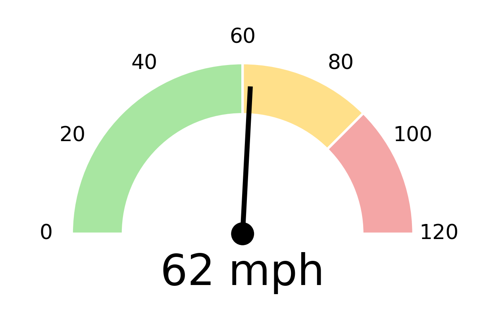
Candidate 3: Battery Charge
Everyone already knows how to read a battery. Color the fill so that low charge looks urgent.
# A fictional charge level
charge = 68
# Choose a color from the charge level
color = 'seagreen' if charge > 50 else 'orange' if charge > 20 else 'firebrick'
# Create a figure and axis object
fig, ax = plt.subplots(figsize=(6, 3))
# Draw the battery body, the terminal, and the fill
ax.add_patch(Rectangle((0, 0), 10, 5, fill=False, linewidth=4, edgecolor='black'))
ax.add_patch(Rectangle((10, 1.75), 0.7, 1.5, color='black'))
ax.add_patch(Rectangle((0.2, 0.2), 9.6 * charge / 100, 4.6, color=color))
# Print the charge in the middle
ax.text(5, 2.5, '{}%'.format(charge), ha='center', va='center', size='xx-large')
# Tidy the axes
ax.set_xlim(-0.5, 11.5)
ax.set_ylim(-0.5, 5.5)
ax.set_aspect('equal')
ax.axis('off')
# Set the title
ax.set_title('Battery Charge')
plt.show()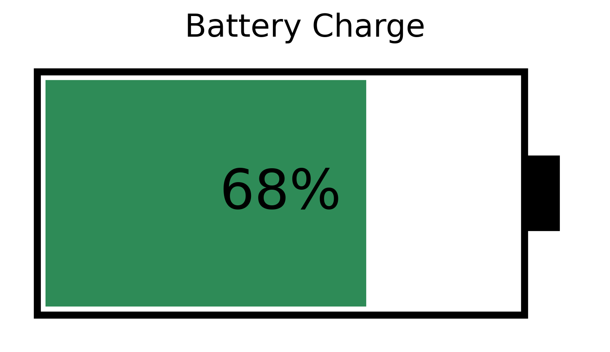
Candidate 4: Progress Bars
Progress bars show how far along each step of a procedure is. The gray track makes the remaining work visible.
# Fictional percent complete for each step of a project
tasks = pd.DataFrame({
'task': ['Data Collection', 'Cleaning', 'Analysis', 'Visualization', 'Report'],
'pct': [100, 100, 65, 30, 0]})
# Create a figure and axis object
fig, ax = plt.subplots(figsize=(5, 3))
# Gray track first, blue progress on top
sns.barplot(data=tasks, x=[100] * len(tasks), y='task', orient='h',
color='lightgray', ax=ax)
sns.barplot(data=tasks, x='pct', y='task', orient='h',
color='steelblue', ax=ax)
# Label the percent complete at the end of each track
for i, v in enumerate(tasks['pct']):
ax.text(102, i, '{}%'.format(v), va='center', size='small')
# Set the title and axis labels
ax.set_title('{} Of {} Project Steps Are Done'.format(
(tasks['pct'] == 100).sum(), len(tasks)))
ax.set_xlabel('')
ax.set_ylabel('')
ax.set_xlim(0, 115)
ax.set_xticks([])
sns.despine(left=True, bottom=True)
plt.show()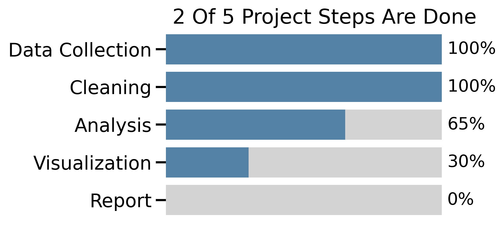
Candidate 5: Bullet Chart
A bullet chart compares the current value (the black bar) to a target (the red line) and to qualitative ranges (the gray bands). Showing every metric as a percent of target lets one chart hold several measures.
# Fictional metrics as a percent of their target
metrics = pd.DataFrame({
'metric': ['Revenue', 'New Customers', 'Satisfaction'],
'pct_of_target': [92, 108, 74]})
# Create a figure and axis object
fig, ax = plt.subplots(figsize=(5, 3.25))
for i, v in enumerate(metrics['pct_of_target']):
# Qualitative ranges: poor, fair, and good
ax.barh(i, 120, height=0.7, color='#eeeeee')
ax.barh(i, 90, height=0.7, color='#d9d9d9')
ax.barh(i, 60, height=0.7, color='#bdbdbd')
# Current value and target line
ax.barh(i, v, height=0.25, color='black')
ax.plot([100, 100], [i - 0.3, i + 0.3], color='red', linewidth=3)
# Label the value
ax.text(122, i, '{}%'.format(v), va='center', size='small')
# Label the rows
ax.set_yticks(range(len(metrics)))
ax.set_yticklabels(metrics['metric'])
ax.invert_yaxis()
# Set the title and axis labels
ax.set_title('Satisfaction Lags Its Target')
ax.set_xlabel('Percent of Target')
ax.set_xlim(0, 135)
ax.set_xticks([0, 50, 100])
sns.despine(left=True)
plt.show()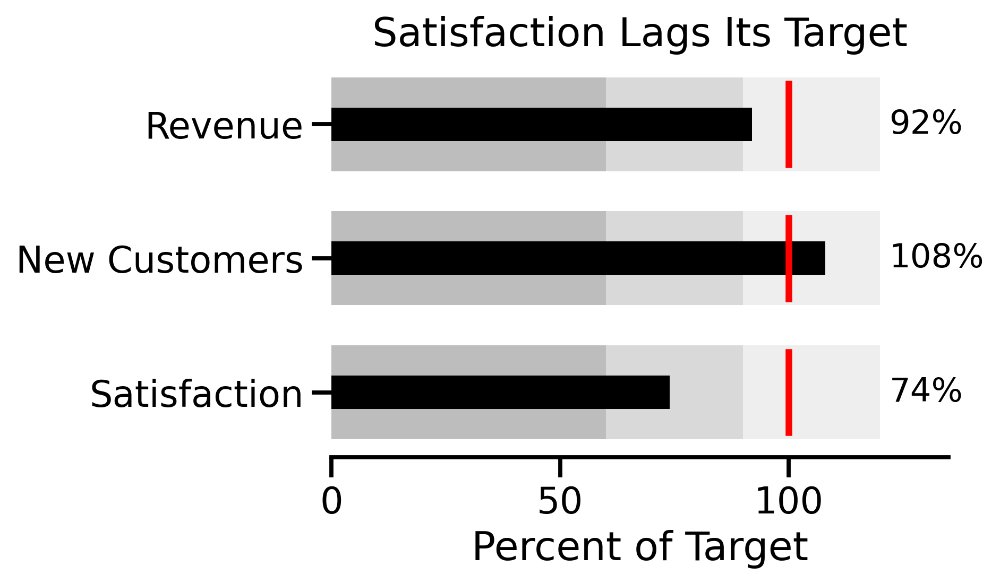
Candidate 6: Sankey Diagram Of A Process
A Sankey diagram follows a cohort through a sequence of stages, with time running left to right. The thickness of each ribbon is the number of people who took that path, so the audience sees both where people come from and where they are lost along the way. Matplotlib has no full-featured Sankey function, so this one is drawn with a short helper. The data are fictional.
# Import the shape used to draw the nodes
from matplotlib.patches import Rectangle
# The stages of the process, in time order
stages = ['Source', 'Campus Visit', 'Application',
'Decision', 'Enrollment']
# The categories shown within each stage, top to bottom
order = [['Social Media', 'College Fairs', 'Mailings', 'Referrals'],
['Visited', 'Did Not Visit'],
['Applied', 'Did Not Apply'],
['Accepted', 'Waitlisted', 'Denied'],
['Enrolled', 'Did Not Enroll']]
# Fictional flows: students moving from a category in one stage
# (stage = 0 is Source) to a category in the next stage
flows = pd.DataFrame([
(0, 'Social Media', 'Visited', 240),
(0, 'Social Media', 'Did Not Visit', 560),
(0, 'College Fairs', 'Visited', 220),
(0, 'College Fairs', 'Did Not Visit', 280),
(0, 'Mailings', 'Visited', 140),
(0, 'Mailings', 'Did Not Visit', 260),
(0, 'Referrals', 'Visited', 180),
(0, 'Referrals', 'Did Not Visit', 120),
(1, 'Visited', 'Applied', 560),
(1, 'Visited', 'Did Not Apply', 220),
(1, 'Did Not Visit', 'Applied', 440),
(1, 'Did Not Visit', 'Did Not Apply', 780),
(2, 'Applied', 'Accepted', 400),
(2, 'Applied', 'Waitlisted', 300),
(2, 'Applied', 'Denied', 300),
(3, 'Accepted', 'Enrolled', 240),
(3, 'Accepted', 'Did Not Enroll', 160),
(3, 'Waitlisted', 'Enrolled', 60),
(3, 'Waitlisted', 'Did Not Enroll', 240)],
columns=['stage', 'source', 'target', 'n'])
# Colors: one per source, then green for success, orange for waiting, gray for exits
palette = dict(zip(order[0], sns.color_palette('Set2', 4)))
palette.update({'Visited': '#6baed6', 'Did Not Visit': 'lightgray',
'Applied': '#6baed6', 'Did Not Apply': 'lightgray',
'Accepted': '#74c476', 'Waitlisted': '#fdae6b',
'Denied': 'lightgray', 'Enrolled': '#74c476',
'Did Not Enroll': 'lightgray'})
# Helper that draws the nodes and the ribbons between them
def draw_flow(ax, flows, stages, order, palette, width=0.1):
# Each node is as tall as the larger of what flows in and what flows out
size = {}
for s in range(len(stages)):
for cat in order[s]:
inflow = flows.loc[(flows['stage'] == s - 1) &
(flows['target'] == cat), 'n'].sum()
outflow = flows.loc[(flows['stage'] == s) &
(flows['source'] == cat), 'n'].sum()
size[(s, cat)] = max(inflow, outflow)
# Stack the nodes in each stage, centered vertically
gap = 0.03 * sum(size[(0, cat)] for cat in order[0])
heights = [sum(size[(s, cat)] for cat in order[s]) + gap * (len(order[s]) - 1)
for s in range(len(stages))]
pos = {}
for s in range(len(stages)):
y = (max(heights) - heights[s]) / 2
for cat in order[s]:
pos[(s, cat)] = y
y += size[(s, cat)] + gap
# Track how much of each node the ribbons have used so far
out_used, in_used = dict(pos), dict(pos)
t = np.linspace(0, 1, 60)
smooth = t * t * (3 - 2 * t)
# Draw one ribbon per flow
for row in flows.itertuples():
s = row.stage
y0 = out_used[(s, row.source)]
y1 = in_used[(s + 1, row.target)]
out_used[(s, row.source)] += row.n
in_used[(s + 1, row.target)] += row.n
bottom = y0 + (y1 - y0) * smooth
ax.fill_between(s + width + (1 - width) * t, bottom, bottom + row.n,
color=palette[row.source], alpha=0.5, linewidth=0)
# Draw the nodes and label them with the category and count
last = len(stages) - 1
for s in range(len(stages)):
for cat in order[s]:
ax.add_patch(Rectangle((s, pos[(s, cat)]), width, size[(s, cat)],
color=palette[cat]))
if s == 0:
x, ha = s - 0.03, 'right'
elif s == last:
x, ha = s + width + 0.03, 'left'
else:
x, ha = s + width / 2, 'center'
ax.text(x, pos[(s, cat)] + size[(s, cat)] / 2,
'{}\n{:,}'.format(cat, size[(s, cat)]),
ha=ha, va='center', size=7,
bbox=dict(boxstyle='round', fc='white', ec='none', alpha=0.7))
# Name each stage along the bottom, rotated to fit
ax.set_xticks([s + width / 2 for s in range(len(stages))])
ax.set_xticklabels(stages, size='x-small', rotation=45, ha='right')
ax.set_xlim(-1.4, last + width + 1.4)
ax.set_yticks([])
ax.invert_yaxis()
# Compute the share of prospects who enroll
enrolled = flows.loc[(flows['stage'] == 3) & (flows['target'] == 'Enrolled'), 'n'].sum()
prospects = flows.loc[flows['stage'] == 0, 'n'].sum()
# Create a figure and axis object
fig, ax = plt.subplots(figsize=(8, 3))
# Draw the diagram
draw_flow(ax, flows, stages, order, palette)
# Set the title
ax.set_title('Prospective College Student Journey')
sns.despine(left=True, bottom=True)
plt.show()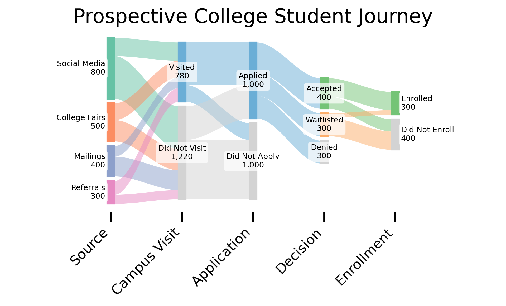
Candidate 7: Sankey Diagram Of A Process
The same diagram applied to a different process: recruiting employees. Each ribbon is a group of applicants moving from one stage of the hiring process to the next, and the gray nodes show where applicants drop out. The data are fictional.
# Import the shape used to draw the nodes
from matplotlib.patches import Rectangle
# The stages of the process, in time order
stages = ['Source', 'Phone Screen', 'Interview',
'Decision', 'Outcome']
# The categories shown within each stage, top to bottom
order = [['Job Boards', 'Career Fairs', 'Recruiters', 'Referrals'],
['Advanced', 'Screened Out'],
['Interviewed', 'Not Interviewed'],
['Offered', 'On Hold', 'Rejected'],
['Joined', 'Did Not Join']]
# Fictional flows: applicants moving from a category in one stage
# (stage = 0 is Source) to a category in the next stage
flows = pd.DataFrame([
(0, 'Job Boards', 'Advanced', 240),
(0, 'Job Boards', 'Screened Out', 560),
(0, 'Career Fairs', 'Advanced', 220),
(0, 'Career Fairs', 'Screened Out', 280),
(0, 'Recruiters', 'Advanced', 140),
(0, 'Recruiters', 'Screened Out', 260),
(0, 'Referrals', 'Advanced', 180),
(0, 'Referrals', 'Screened Out', 120),
(1, 'Advanced', 'Interviewed', 560),
(1, 'Advanced', 'Not Interviewed', 220),
(1, 'Screened Out', 'Interviewed', 440),
(1, 'Screened Out', 'Not Interviewed', 780),
(2, 'Interviewed', 'Offered', 400),
(2, 'Interviewed', 'On Hold', 300),
(2, 'Interviewed', 'Rejected', 300),
(3, 'Offered', 'Joined', 240),
(3, 'Offered', 'Did Not Join', 160),
(3, 'On Hold', 'Joined', 60),
(3, 'On Hold', 'Did Not Join', 240)],
columns=['stage', 'source', 'target', 'n'])
# Colors: one per source, then green for success, orange for waiting, gray for exits
palette = dict(zip(order[0], sns.color_palette('Set2', 4)))
palette.update({'Advanced': '#6baed6', 'Screened Out': 'lightgray',
'Interviewed': '#6baed6', 'Not Interviewed': 'lightgray',
'Offered': '#74c476', 'On Hold': '#fdae6b',
'Rejected': 'lightgray', 'Joined': '#74c476',
'Did Not Join': 'lightgray'})
# Helper that draws the nodes and the ribbons between them
def draw_flow(ax, flows, stages, order, palette, width=0.1):
# Each node is as tall as the larger of what flows in and what flows out
size = {}
for s in range(len(stages)):
for cat in order[s]:
inflow = flows.loc[(flows['stage'] == s - 1) &
(flows['target'] == cat), 'n'].sum()
outflow = flows.loc[(flows['stage'] == s) &
(flows['source'] == cat), 'n'].sum()
size[(s, cat)] = max(inflow, outflow)
# Stack the nodes in each stage, centered vertically
gap = 0.03 * sum(size[(0, cat)] for cat in order[0])
heights = [sum(size[(s, cat)] for cat in order[s]) + gap * (len(order[s]) - 1)
for s in range(len(stages))]
pos = {}
for s in range(len(stages)):
y = (max(heights) - heights[s]) / 2
for cat in order[s]:
pos[(s, cat)] = y
y += size[(s, cat)] + gap
# Track how much of each node the ribbons have used so far
out_used, in_used = dict(pos), dict(pos)
t = np.linspace(0, 1, 60)
smooth = t * t * (3 - 2 * t)
# Draw one ribbon per flow
for row in flows.itertuples():
s = row.stage
y0 = out_used[(s, row.source)]
y1 = in_used[(s + 1, row.target)]
out_used[(s, row.source)] += row.n
in_used[(s + 1, row.target)] += row.n
bottom = y0 + (y1 - y0) * smooth
ax.fill_between(s + width + (1 - width) * t, bottom, bottom + row.n,
color=palette[row.source], alpha=0.5, linewidth=0)
# Draw the nodes and label them with the category and count
last = len(stages) - 1
for s in range(len(stages)):
for cat in order[s]:
ax.add_patch(Rectangle((s, pos[(s, cat)]), width, size[(s, cat)],
color=palette[cat]))
if s == 0:
x, ha = s - 0.03, 'right'
elif s == last:
x, ha = s + width + 0.03, 'left'
else:
x, ha = s + width / 2, 'center'
ax.text(x, pos[(s, cat)] + size[(s, cat)] / 2,
'{}\n{:,}'.format(cat, size[(s, cat)]),
ha=ha, va='center', size=7,
bbox=dict(boxstyle='round', fc='white', ec='none', alpha=0.7))
# Name each stage along the bottom, rotated to fit
ax.set_xticks([s + width / 2 for s in range(len(stages))])
ax.set_xticklabels(stages, size='x-small', rotation=45, ha='right')
ax.set_xlim(-1.4, last + width + 1.4)
ax.set_yticks([])
ax.invert_yaxis()
# Create a figure and axis object
fig, ax = plt.subplots(figsize=(8, 3))
# Draw the diagram
draw_flow(ax, flows, stages, order, palette)
# Set the title
ax.set_title('Prospective Employee Applicant Journey')
sns.despine(left=True, bottom=True)
plt.show()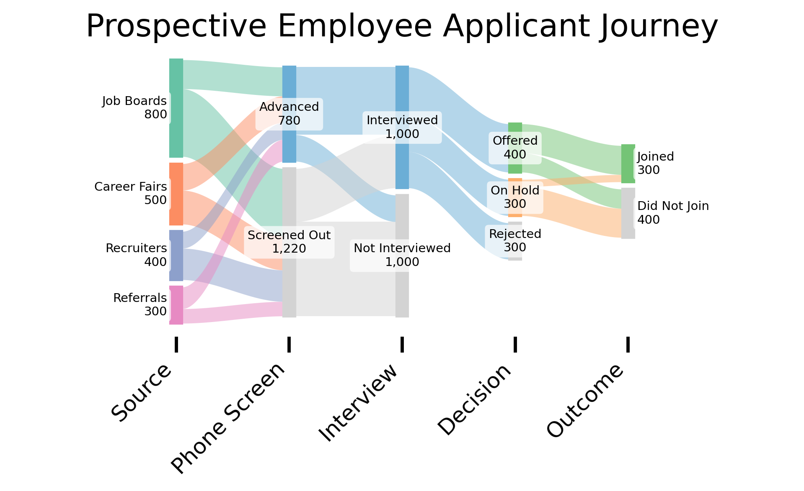
Outtakes
Candidate 1: Sankey Diagram
A Sankey diagram shows how a population flows through the stages of a process. The thickness of each ribbon is the number of people (or items) that took that path. Matplotlib has no full-featured Sankey function, so this one is drawn with a short helper.
# Build a table of the three stages in the flow
flow = pd.DataFrame({
'Class': titanic['class'].astype(str),
'Sex': titanic['sex'].str.title(),
'Outcome': titanic['alive'].map({'yes': 'Survived', 'no': 'Did Not Survive'})})
# The stages (in order) and the categories to show within each stage
stages = ['Class', 'Sex', 'Outcome']
order = {'Class': ['First', 'Second', 'Third'],
'Sex': ['Female', 'Male'],
'Outcome': ['Survived', 'Did Not Survive']}
# One color for every category
palette = dict(zip(
['First', 'Second', 'Third', 'Female', 'Male', 'Survived', 'Did Not Survive'],
sns.color_palette('Set2', 7)))
# Helper that draws the nodes and the ribbons between them
def draw_sankey(ax, df, stages, order, palette, width=0.12):
gap = 0.04 * len(df)
# Stack the nodes in each stage and remember where each one sits
pos, size = {}, {}
for stage in stages:
y = 0
for cat in order[stage]:
pos[(stage, cat)] = y
size[(stage, cat)] = (df[stage] == cat).sum()
y += size[(stage, cat)] + gap
# Track how much of each node has been used by ribbons so far
out_used = dict(pos)
in_used = dict(pos)
# Draw the ribbons between each pair of neighboring stages
for i in range(len(stages) - 1):
a, b = stages[i], stages[i + 1]
for ca in order[a]:
for cb in order[b]:
n = ((df[a] == ca) & (df[b] == cb)).sum()
if n == 0:
continue
y0, y1 = out_used[(a, ca)], in_used[(b, cb)]
out_used[(a, ca)] += n
in_used[(b, cb)] += n
t = np.linspace(0, 1, 60)
s = t * t * (3 - 2 * t)
bottom = y0 + (y1 - y0) * s
ax.fill_between(i + width + (1 - width) * t,
bottom, bottom + n,
color=palette[ca], alpha=0.5, linewidth=0)
# Draw the nodes and label them with the category and count
for i, stage in enumerate(stages):
for cat in order[stage]:
key = (stage, cat)
ax.add_patch(Rectangle((i, pos[key]), width, size[key],
color=palette[cat]))
ax.text(i + width / 2, pos[key] + size[key] / 2,
'{}\n{}'.format(cat, size[key]),
ha='center', va='center', size='xx-small',
bbox=dict(boxstyle='round', fc='white', ec='none', alpha=0.8))
# Name each stage along the bottom
ax.set_xticks([i + width / 2 for i in range(len(stages))])
ax.set_xticklabels(stages)
ax.set_xlim(-0.1, len(stages) - 1 + width + 0.1)
ax.set_yticks([])
# Create a figure and axis object
fig, ax = plt.subplots(figsize=(8, 5))
# Draw the diagram
draw_sankey(ax, flow, stages, order, palette)
# Set the title
ax.set_title('Survival Depended On Class And Sex')
sns.despine(left=True, bottom=True)
plt.show()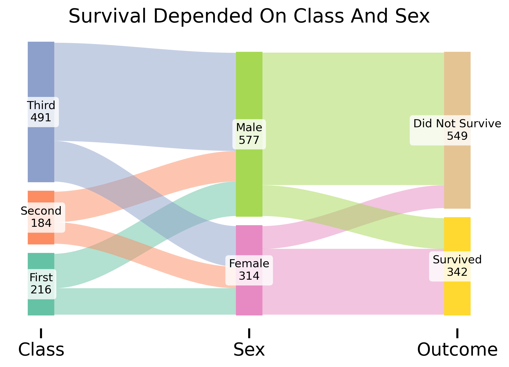